9 Kara Kuşları
Paçalı Bağırtlak
Syrrhaptes paradoxus, Pallas’s Sandgrouse
Rastlantısal konuktur.
Belki de farazi olarak kabul edilmesi daha uygun olabilir. 1888’in Kasım ortasında, türün Batı ve Orta Avrupa’ya yaptığı büyük istilalardan biri sırasında, tahminen günümüzün Rumelifeneri’nde yakalanmış 4 Paçalı Bağırtlak, İstanbul’un kümes hayvanları pazarında görülmüştür (Mathey-Dupraz, 1920–24). Bu kaydın dışında , türün yeni yerleri kolonize ettiği 1859 ve 1863 yıllarında da Türkiye’ye ulaştığından söz etmiş ancak ayrıntılı bilgi vermemiştir (Ergene, 1945). 1962’de Tansu Gürpınar Konya Çumra Avcılar Kulübü’nde doldurulmuş 1 bireye rastlamıştır. Türün kaydedilmiş en büyük hareketleri Avrupa’ya sokulduğu 1863 ve 1888 yıllarında gözlenmiştir (Madge & McGowan, 2002). Türkiye’den güncel kayıt yoktur. Ortadoğu’daki diğer bölgelerde ise türden yalnızca “Büyük olasılıkla Hazar Denizi’nin doğusundaki İran steplerinin düzensiz konuğudur” diye söz edilmektedir (Porter et al., 1996).
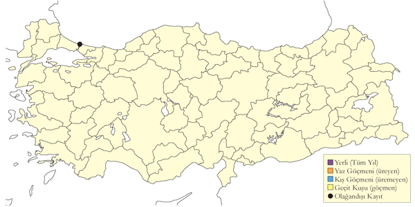
Üreme
Türkiye’de yuvalamaz.
Alttürler ve Sınıflandırma
Monotipik bir türdür.
Kılkuyruk Bağırtlak
Pterocles alchata, Pin-tailed Sandgrouse
Lokal ve nadir yaz konuğudur.
Geçmişteki çoğu sayımda 50-500 birey arasında kaydedilmiştir. Mayıs 1970’te Akçakale yakınında ve 1980’lerde Birecik’te 2000 bireye kadar sayıldığı da olmuştur. Ancak sözü geçen bölgede yakın zamanda yapılan, bir noktada en fazla ancak 31 bireyin sayıldığı ve türe 10 km karelik dört karede rastlanmış, büyük bir azalmanın yaşandığı kanıtlanmıştır (2004). Bağırtlak P. orientalis’da gözlendiği gibi, su içmek için Birecik’te Fırat Nehri’ni ziyaret eden birey sayısında yakın zamanda ciddi bir azalma görülmüştür. Büyük olasılıkla bu azalmanın nedeni kısmen, Suriye sınırından yukarıdaki baraj projeleri nedeniyle su seviyesinde yakın zamanda yaşanan değişimler olsa da, kurak bozkır alanlara açılan tarım arazileri azalmada rol sahibidir. İç Anadolu’da nadiren kaydedilmiştir. Mayıs 1971’de Tuz Gölü’nün doğusunda, Mayıs 1986’da ise Konya Havzası’nın güneyindeki iki noktada kaydedilmiştir. Kısa süre önce, Temmuz 1998’de, yalnızca bir kez ama büyük sayıda olmak üzere Van’da gözlenmiştir (Kirwan et al., 1999). 19.yy’a ait kayıtlar Mersin’den (Mart ortasında) ve İzmir’den bildirilmiştir (Kumerloeve, 1961).
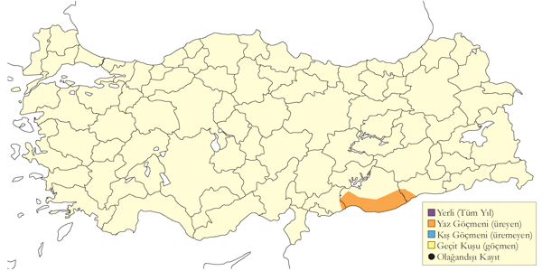
Üreme
Haziran 1977’de K. Warncke tarafından, içinde 2 yumurta olan bir yuva ile büyük olasılıkla yine bu yuvada yumurtaları ya da yavruları ile ilgili olarak kuluçkaya yatmış bir erişkinin fotoğrafı çekilmiştir (Pforr & Limbrunner, 1982), ancak daha ayrıntılı bilgi mevcut değildir. Yakın zamana ait üreme kaydı yoktur, ancak büyük olasılıkla hala ülkenin güneydoğusunda üremektedir.
Alttürler ve Sınıflandırma
Türkiye’de caudacutus alttürü bulunur.
Benekli Bağırtlak
Pterocles senegallus, Spotted Sandgrouse
Rastlantısal konuktur.
Her ikisi de Birecik’ten bildirilmiş olan iki kaydı vardır: 18 Temmuz 1986’da gözlenen bir dişi (Martins, 1989) ile 20 Haziran 1999’da kaydedilen bir çift (Kirwan et al., 2000). Her iki kayıt da gözlemciler tarafından çok iyi tarif edilmiştir. Bunların yanı sıra en az bir gözlemde daha, 17 Temmuz 1987’de yine Birecik’te, büyük olasılıkla bu türe ait 2 birey kaydedilmiştir. Bu gözleme ait bazı betimleyici ayrıntılar mevcuttur. Benekli Bağırtlak önceden Suriye’nin orta ve güney bölgelerinde üremiştir ancak ülkenin kuzeyinden sadece bir tane, Eylül 1945 tarihli kayıt vardır. Yakın zamanlı bir diğer kayıt ise Nisan 1994’de ülkenin orta bölgesinden bildirilmiştir (Baumgart et al., 1995). En yakındaki halen aktif üreme bölgeleri güney Irak ve Levant bölgesinde gibi görünmektedir.
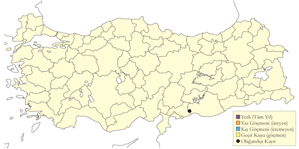
Üreme
Türkiye’de yuvalamaz.
Alttürler ve Sınıflandırma
Monotipik bir türdür.
Bağırtlak
Pterocles orientalis, Black-bellied Sandgrouse
Nispeten lokal ve az sayıda yaz konuğudur.
Seyrek ancak nispeten yaygın olarak bulunan bir yerli kuş ve yarı göçmendir. İç Anadolu ile Doğu Anadolu’nun genelinde ve en azından geçmişte Güneydoğu Anadolu’da en az 2300 m’de bulunur. İç Anadolu bölgesinde özellikle yaygın yayılışlıdır. En azından önceleri bu bölgede türe sıklıkla büyük sürüler halinde rastlanmıştır. 100’ün üzerinde bireyin sayıldığı birkaç gözlem ve Eylül 1974’te kaydedilen 500 birey bu bölgeden bildirilmiştir. Türün esas olarak kış konuğu olduğu (aşağıya bkz.) Karadeniz, Ege ve Akdeniz Bölgesi’nde az sayıda kaydedilir. Doğu Anadolu’da, Van Gölü çevresinde düzenli olarak kuzeyde Horasan ve Ağrı ile Kağızman ve Iğdır boyunca, doğuda Doğubayazıt bölgesine ve batıda Hafik’e kadar yayılır. Nadiren 50’yi aşan sayıda kaydedilmiştir. Tür şimdilerde, önceleri düzenli olarak 100’ün üzerinde sayıldığı Güneydoğu Anadolu’da, hatta Birecik’te bile çok nadir ve lokaldir (2004). Kuru step alanlarına yapılan tarım amaçlı değişiklikler sonucunda sözü geçen 3 bölgede de azalmaktadır.
Bağırtlak birçok bölgede yarı göçmendir. Kışın daha ılıman bölgelere hareket eder. Örneğin ekim sonu ile mart başı arasında İç Anadolu’nun birçok bölgesinde görülmez. Bu mevsimde, Ege’de ve Akdeniz Bölgesi’nde epey nadirdir. Gediz Deltası’na dek batıda da kaydedildiği olmuştur (Gonzenbach, 1852). Akdeniz Bölgesi’nde ise Hatay’a dek güneyde rastlanmıştır. Bu kayıtlarda bildirilen birey sayısı genellikle düşüktür ancak Ocak 1970’de Acıgöl’de 120 birey kaydedilmiştir. Nisan sonunda Göksu Deltası’nda görülebilir (Davidson & Kirwan, 1997).
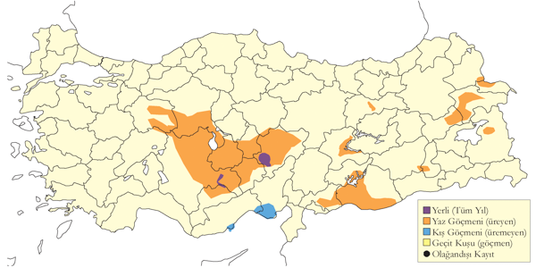
Üreme
Çıplak zeminli ya da alçak dağınık çalılar içeren kuru, düzlük steplerde ya da kurak, hafif eğimli tepelerde ürer. Genellikle yalnız ürer ancak en uygun habitatlarda aralarında geniş mesafe olan birkaç çift birlikte bulunabilir. Yere, genellikle astarlanmamış sığ bir çukura yuvalar. Türkiye’de gözlenen yumurta sayısı 3 (11 yuvada). İçinde 1 yumurta bulunan 3 yuvanın tamamlanmamış kuluçkaya sahip olduğu kabul edilmiştir. İÇA. 8-14 Mayıs 1876’da, Kayseri’nin kuzeyinde, her birinde 3 taze yumurta bulunan 4 yuva kaydedilmiştir (Danford, 1877-78). 3 Mayıs 1989’da Karapınar’da, üçünde 3, birinde 1 yumurta olan 4 yuva bulunmuştur. Aynı yerde 10 Mayıs 1990’da bulunan diğer bir yuvada ise 3 yumurta sayılmıştır. 14 Mayıs 1993’de Bolluk Gölü yakınındaki bir yuvada, tamamlanmamış bir kuluçkada tek bir yumurta kaydedilmiştir. 29 Mayıs 1983’te Sultansazlığı’ndaki 1 yuvada 3 yumurta (Kasparek, 1985), yakındaki bir başka noktada 27 Mayıs 1972’de bulunan bir diğer yuvada ise 3 yumurta kaydedilmiştir. Cihanbeyli yakınlarında 31 Mayıs 1974’te içinde 3 yumurta ile bulunan yuvanın ve aynı yerde 12 Haziran 1973’te gözlenen yeni tüylenmiş yavrunun fotoğrafları çekilmiştir (Pforr & Limbrunner, 1982).
Alttürler ve Sınıflandırma
Türkiye’de nominat alttürü bulunur. Tür Türkiye’de tanımlanmıştır.
Kaya Güvercini
Columba livia, Rock Dove
Menşei karışık olarak; yaygın ve çok sayıda bulunan yerlidir.
Şehir güvercini formunda ülke çapında ve özellikle İstanbul, İç Doğu ve Güneydoğu Anadolu’da yaygın ve çok boldur. Saf veya safa yakın kaya güvercini formu çok daha az sayıda bulunur ve güneyde 3000 m. kuzeyde ve doğudan 4000 metreye kadar yükseklikteki kayalık ve dağlık arazide ve de deniz kıyısındaki yarlarda bulunur. Saf popülasyonların tespit edilebilmesi için gözlemcilerin yabani dondaki güvercin gruplarını daha ayrıntılı tanımlamaları gerekmektedir. Buna rağmen en azından Güneydoğu Anadolu’da şehir kuşları ve insan yerleşimlerine yakın üreyebilen yabani kuşları birbirinden ayırt etmek mümkün görünmemektedir.
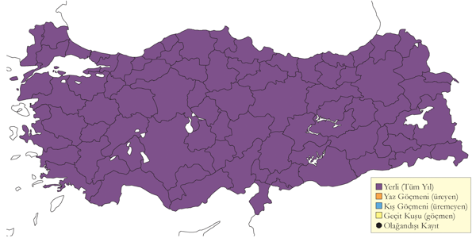
Üreme
Çoğunlukla 20 çiftten az küçük koloniler halinde, bazen de tek başına yuvalar. Yuvası kaya oyukları, yarlardaki mağaralar, serpme kaya yığınları, binalar, harabeler, yer kuyuları ve yerde çalıların altında olabilir. Bazen yuvalama alanını diğer kuşlarla, özellikle de küçük karga ile paylaşır. Yuva dallar, ince bitki gövdeleri ve köklerden oluşan ince bir platformdur. Yumurta sayısı 2 (15 yuvada) veya olası tamamlanmamış kuluçkalarda 1 (2 yuvada). Yavru sayısı 2 (2 yuvada). İÇA. 22 Mayıs 2007’de aynı yuvada hem iki tane tam gelişmiş yavru, hem de iki yumurta aynı anda görülmüş (Ramsay, 1914) ve bunun iki çiftin üretimi olduğu ve muhtemelen yavruların kendi yuvalarından ayrıldıkları farz edilmiştir. 7 Mayıs’ta görülen yeni palazlanmış yavru, yumurtlamanın Mart ortasında olduğunu belirtir. Bolluk Gölü’ndeki bir adadaki kolonide kuşlar yerde çalıların altında suna yuvalarıyla karışık olarak yuvalamışlar, hem 24 Haziran 1992’de hem de 7 Mayıs 1993’de yaklaşık 5 yuvada ikişer yumurta görülmüş olup, bu yaygın bilindiği üzere yılda iki kere kuluçkaya yattığının açık göstergesidir. EGE. Çeşme açıklarında Ilıca adasında 8 Mayıs 1950’de düz bir zeminde bir çalının altında içinde uzun zamandır kuluçkaya yatılan iki yumurta olan bir yuva görülmüştür [@(McNeile, 1950, 1951, 1954, 1967, 1968, 1970, 1972, 1973)1950]. (Selous, 1900) İzmir yakınlarındaki bir harabede 14 Mayıs 1899’da içinde iki yumurta bulunan bir yuva bulmuştur. DOA. Balık Gölü’nde 9 Haziran 2001’de birçok çift küçük karga ile beraber gölün ortasındaki bir adadaki kaya yığınları arasında yuvalamıştır.
Alttürler ve Sınıflandırma
Türkiye’ genelinde nominat alttür bulunur. Bunun yanında (Kumerloeve, 1961) kuzeydoğuda gaddi alttürü ve güneyde palaestinae alttürü olduğunu düşünmüş, Roselaar (1985) Türkiye ve Kafkas popülasyonları için ayrı bir alttür tanınması önermiştir.
Gökçe Güvercin
Columba oenas, Stock Dove
Seyrek ve lokal yaz konuğu, nispeten yaygın ve az sayıda geçit kuşu ve kış konuğudur.
Ülkenin zengin ormanlı dağlık bölgelerinde en azından 2100 metreye kadar çıkan oldukça az sayıda ve yerel dağılım gösteren yerli ve yarı göçmendir. Istranca Dağları’nda büyük ihtimalle üremektedir, Mayıs, Ağustos 2009 arasında yapılan çalışmada bazı ihtimaller gözlenmiştir (Özkan 2010). Bulgaristan tarafından ürediği bilindiği için büyük bir sürpriz değildi (Milchev, 1994). Doğu Karadeniz’in bazı bölgelerinde 400 metrenin altında nispeten bol olarak ürer (Faldborg, 1994). Geçit sırasında daha yaygındır. İstanbul Boğazı’ndan Eylül ortası ile Ekim sonu arasında en yüksek sayıda da Ekim ortasında geçit yapar (Porter, 1983; Beaman, 1986). Kuzeydoğu Anadolu’da en yüksek sayılarda Ekim ortası ile sonu arasında geçer (Beaman, 1986). İlkbaharda geçişinde Kızılırmak Deltası’nda Mart sonu en yoğun geçer ve geçişi nisan ortasına kadar geçtiği saptanmış olsa da (Hustings & Dijk, 1994), bu yayındaki çalışma muhtemelen erken göçünü kaçırmıştır. Sonbahar göçünde güney kıyılarında ve hatta doğu bölgelerinde de bulunabilir. Kışın batı ve orta bölgelerinde özellikle İç Anadolu’nun batı, güneybatı ve güney kısımlarında Toros Dağları eteklerinde yer yer kayda değer sayılarda olabilir. Üremeyen kuşlar kışlama alanlarında Mayıs ortasına kadar kalabilir.
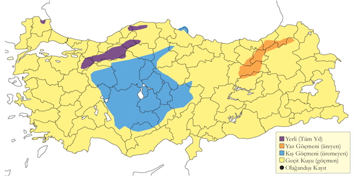
Üreme
Bir bilgi yoktur.
Alttürler ve Sınıflandırma
Türkiye’de nominat alttürü bulunur.
Tahtalı
Columba palumbus, Common Wood Pigeon
Oldukça yaygın ve nispeten çok sayıda bulunan yerli ve yarı göçmen, yaygın ve çok sayıda bulunan geçit türü ve kış konuğudur.
Akdeniz Bölgesi’nde en yaygın, İç Anadolu’da seyrektir. Genellikle daha kurak ve çoğunlukla dağlık ibreli ormanlarda ürer, yayılışı seyrek olabilir. Deniz seviyesinde az sayıda ürer, çoğunlukla 900 metrenin üstündedir, en azından 2200 metreye kadar çıkabilir.
Ülke çapında geçit sırasında daha yaygındır, İstanbul Boğazı’ndan geçişi eylül başından ekim başı arasında, dolayısıyla gökçe güvercinden daha erkendir. 2-4 Ekim 1974’de 647 tane sayılmış, 24 Eylül ve 8 Ekim 1973’de de toplam 11.780 kuş sayılmış, en yoğun geçiş 2000 kuşla 2 Ekim’de gerçekleşmiştir. Göçü güney kıyılarında da hissedilir, ancak Akdeniz’deki büyük nehir deltalarında çok seyrektir. Marmara ve İç Anadolu’nun iç bölgelerinde göç sırasında birkaç yüzlük sürüler halinde görülebilir. Kışın yer yer yüksek sayılarda görülebilir, İç Anadolu’da genellikle azdır. Batı ve güneyde kışlayan sürüler iç bölgelerden göç alabilir, Aralık 1969’da Antalya Korkuteli’nde 950, Burdur Gölü’nde 740’lık sürülere rastlanmıştır. İlkbahar göçü mart ortası ve nisan ortası arasında yoğunlaşır, 24-31 Mart 1972’de Manyas Kuşcenneti’nde toplanan yaklaşık 10.000, 19 Kasım 2005’de Sandıklı ve Afyon arasında toplanan 2000 kuş ve Aralık 2004’de Meriç Deltası’nda toplanan binlercesi son derece istisnai bir kalabalık oluşturmuştur. Kışlama alanlarında mayısın ilk haftasına kadar kalabilir.
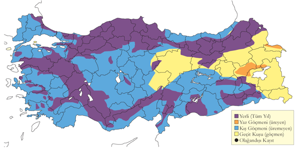
Üreme
Birçok bölgedeki ormanlık alanlarda seyrek de olsa geniş bir yayılış gösteren bu tür hakkında ayrıntılı üreme gözlemleri yoktur. KAR. Kızılırmak Deltası Yörükler Ormanı’nda Nisan 1992’de bazılarının gösteri uçuşu yaptığı, 3 Haziran 1992’de yuva yakınında bir kuş görülmüştür (Hustings & Dijk, 1994). Zigana Dağı Torul yakınında 16 Haziran 1975’de gençler görülmüştür. GDA. Gaziantep Karkamış’ta 3 Mayıs 2004’de gösteri uçuşu gözlenmiştir.
Alttürler ve Sınıflandırma
Türkiye’de nominat alttürü bulunur. (Roselaar, 1995) Güneydoğu’da iranica alttürü ile bir geçişin görülebilir olduğundan bahseder. (Gibbs et al., 2001) daha doğuda iranica alttürünün casiotis alttürüne geçiş yaptığını, dolayısıyla iranica’nın casiotis’in bir sinonimi olabileceğini belirtmiştir. Buna rağmen bu üç formların klinal varyasyonlar oluşturması, Türkiye çapında bu iki alttürden birinin varlığını şüpheye sokar.
Üveyik
Streptopelia turtur, European Turtle Dove
Yaygın ve yer yer çok çok sayıda bulunan yaz konuğu ve geçit türüdür.
Ülkenin çoğu yerindeki ormanlık ve tarımsal arazilerde genellikle oldukça çok ve yaygın olan bir yaz konuğudur. Batıda daha yaygın, doğuda da oldukça lokaldir. Karadeniz ve Marmara bölgelerinde 1500 metreye kadar, Toroslar’da 200-1300 metrede, Kuzeydoğu Anadolu’da da 2000 metreye kadar yuvalar. Geçit sırasında daha yaygındır, sıka çok yüksek sayılarda görülür. İlkbaharda nisan başında gelir, ekim başına kadar kalır. İstanbul Boğazı’ndan ciddi ölçekte bir geçiş olmasa da Kuzeydoğu Anadolu ve kısmen Doğu Anadolu’da çok bol sayıda görülür. 1968 Eylül sonunda yüzlercesi Silifke ve Antalya arasındaki Akdeniz kıyısında gözlenmiş, yaklaşık 1000 tanesi 16 Haziran 1975’de Zigana Geçidi ve Trabzon arasında, aynı tarihte yaklaşık 3000-4000 tanesi Erzurum ve Gümüşhane arasında, yaklaşık 2000 tanesi 2 Mayıs 2004’de Birecik’in güneyinde gecelerken gözlenmiştir. İlkbahar geçişi az ölçekte de olsa özellikle kuzey bölgelerinde haziran ortasında kadar devam eder. En erken geliş tarihi 30 Mart’tır. Dönüş temmuzun son haftasında başlar, eylül ayında tepe yapar ve genellikle ekim başında biter. İç Anadolu’da en geç 28 Ekim’de görülmüştür.
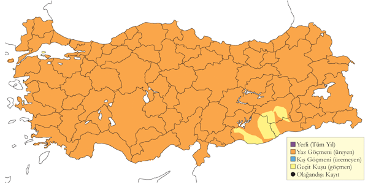
Üreme
Ağaçlık, çitlik ve yüksek çalıların olduğu doğal ve tarımsal arazilerde, meyve ve zeytin bahçelerinde, ormanlarda ve orman kenarında bulunur. Yuvası genellikle bir çalı veya alçak ağaçta yerde 2-4 metre yukarıdadır. Yuvası ince dallardan örülmüş sığ bir platform olup, hafif çukur ortası otlar ve ince köklerle astarlanır. Yumurta sayısı 2 (13 yuvada) ve ara sıra 1 (1 yuvada), ki bu da tamamlanmamış kuluçkaya işaret edebilir. Yavru sayısı 2 (3 yuvada). KAR. Kızılırmak Deltası’nda Temmuz 1971’de 1 hektarlık ormanda sekiz tane kullanılan yuva sayılmış (Dijksen & Kasparek, 1985), 1992’de ise toplam 600-800 çiftin ürediği tahmin edilmiştir (Hustings & Dijk, 1994). EGE. 10 Mayıs 1950’de içinde yeni konmuş yumurtalar olan yuva en erken üreme kaydıdır. İzmir [@(McNeile, 1950, 1951, 1954, 1967, 1968, 1970, 1972, 1973)1950] ve Aydın Akköy’de mayısın ikinci yarısı ve haziran başında birkaç başka kayıt vardır. Bafa Gölü’nde 24 Haziran 1966’da içinde iki yumurta bulunan bir yuva gözlenmiştir. GDA. Birecik’te 18 Mayıs 1993’te içinde iki yumurta bulunan bir yuva bulunmuş, Halfeti’de 11 Mayıs 2004’de küçük bir meyve bahçesinde 1,7 metre boyundaki ağaçlarda içinde ikişer yumurta bulunan iki yuva bulunmuş, Gaziantep yakınlarında 8 Haziran 1993’de yuva kuran erişkinler ve 14 Haziran 1996’da muhtemelen ikinci yuvayı kuran kuşlar gözlenmiştir. İÇA. Göreme yakınlarında 30 Mayıs 1999’da dört erişkin gösteri uçuşunda gözlenmiş, Hasan Dağı’nda 25 Haziran 1992’de içinde bir ve iki yumurta bulunan ve muhtemelen ikinci kez kuluçkaya yatılan iki yuva bulunmuş, ancak Karaman Karadağ’da 13 Haziran 1907’de bulunan içinde birkaç günlük iki yavru bulunan yuva (Ramsay, 1914) muhtemelen ilk kuluçkaydı. Türkiye dışında yılda iki hatta üç kez kuluçkaya yattığı ve üremenin Ağustos’a kadar devam ettiği bilinir, ancak Türkiye’den henüz böyle gözlemler yoktur.
Alttürler ve Sınıflandırma
Türkiye’de nominat alttürü bulunur.
Büyük Üveyik
Streptopelia orientalis, Oriental Turtle Dove
Rastlantısal konuktur.
İlk kez 12-15 Ocak 2011 tarihlerinde Ayvalık’ta bir bahçede kaydedilmiştir. İlk kışında olan ve diğer Avrupa ve Orta Doğu kayıtlarıyla uyumlu olarak meena alttürüne ait olan ilk kışındaki bu birey iyi şekilde fotoğraflanmıştır. Ardından aynı kış, 7 Şubat 2011’de Yeşilırmak Deltası’nda bir birey gözlenmiş ve fotoğraflanmıştır.
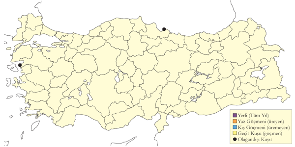
Üreme
Türkiye’de yuvalamaz.
Alttürler ve Sınıflandırma
Türkiye’de nominat alttürü bulunur. Tür bugünkü Türkiye sınırlarında tanımlanmıştır.
Kumru
Streptopelia decaocto, Eurasian Collared Dove
Yaygın ve çok sayıda bulunan yerli ve yarı göçmendir.
Genellikle alçak bölgelerde bulunur, Doğu Anadolu’da oldukça yerel yayılış gösterir, Doğu Karadeniz’de yoktur. Son yıllarda hem Balkanlar hem de Orta Doğu’da yayılış alanında ciddi değişimler yaşanmış ve bu olgu (Kasparek, 1996, 1998) tarafından incelenmiş ve Türkiye’yi de içine alan bu coğrafyada yayılış alanındaki genişleme belgelenmiştir. Bazı bölgelerde yarı göçmen olduğu düşünülür, kışları sert geçen iç bölgelerde kıyı bölgelerine bir hareket vardır. Kışın ve ilkbaharda yüzlerce kuştan oluşan sürüler gözlenmiştir.
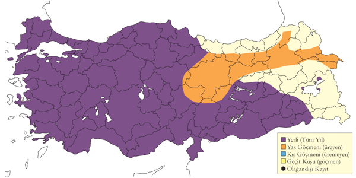
Üreme
Tarım araziler ve kentsel bölgelerde, özellikle köy ve kasabalardaki, ideal koşullarda yapraklı ve ibreli ağaçların karışık bulunduğu, gelişmiş bahçe ve parklarda yuvalar. Yuvası bir ağaçta veya yüksek bir çalıda, bazen Mersin’de gözlemlediği gibi binalarda ve telefon direklerindedir (Hollom, 1955). Yuva ince dal ve bitki gövdelerinden oluşan cılız bir platform olup daha ince bitkisel materyaller ve diğer malzemelerle özensizce astarlanır. Yumurta sayısı 2 (3 yuvada). Yavru sayısı 2 (2 yuvada). EGE. Aydın Akköy’de 23 Nisan 2003’de, ve İzmir’de 9 Mayıs 1950’de [@(McNeile, 1950, 1951, 1954, 1967, 1968, 1970, 1972, 1973)1950] kuluçkadaki erişkinlerin gözlenmiştir. İzmir’de 2 Haziran 1954’de bir yuvada yeni koyulmuş iki yumurta kaydedilmiş [@(McNeile, 1950, 1951, 1954, 1967, 1968, 1970, 1972, 1973)1950], Akhisar’da 29 Haziran 1966’da bir tespih ağacının üzerine yerleştirilmiş hasır bir sepetteki yuvada kuluçkaya yatmış bir erişkin gözlenmiştir. İÇA. Konya Hotamış’ta 24 Nisan 1991’de bir yuva bulunmuş (Kirwan, 1993), Kayseri İncesu’da Haziran 1991’in ilk haftasında bir karaçamın içindeki yuvada iki yumurta tespit edilmiş (BD), Şereflikoçhisar’da 23 Nisan 2004’de yol kenarındaki bir ağaçta kuluçkaya yatan bir erişkin gözlenmiş, Cihanbeyli’de 15 Mayıs 2004’de bulunan bir yuvada yumurtadan yeni çıkmış iki yavru gözlenmiştir. AKD. Mersin’de 18 Mayıs 1951’de bir erişkin yuvasını astarlarken gözlenmiş (Hollom 1955), İskenderun’da 3 Mayıs 1970’de bir yüksek gerilim hattı direğine yuva kuran bir erişkin gözlenmiş, Dalaman Havaalanı’nda 5 Mayıs 2003’de bir sıra ibreli ağaçtaki yuvada kuluçkada bir erişkin gözlenmiş, Göksu Deltası’nda 6 Mayıs 2004’de iki erişkinin kuluçkada olduğu iki yuva gözlenmiştir. GDA. Halfeti yakınında 11 Mayıs 2004’de yuva yapımı gözlenmiş, Birecik’te 3 Haziran 1998’de iki yuvada ikişer yumurta gözlenmiş ve 11 Mayıs 2004’de iki yumurta bulunmuştur. Birecik’te 25 Haziran 2001’de yuvadaki iki iri yavru bir yılan tarafından yenmiştir. Tür ülkede ve diğer bölgelerde yılda iki kez kuluçkaya yatar.
Alttürler ve Sınıflandırma
Türkiye’de nominat alttürü bulunur. Tür bugünkü Türkiye sınırlarında tanımlanmıştır.
Küçük Kumru
Spilopelia senegalensis, Laughing Dove
Nispeten yaygın ve çok sayıda bulunan yerlidir.
Ülkedeki yayılış alanı ve durumu (Kasparek, 1991) tarafından ayrıntılı bir araştırma konusu olarak ele alınmıştır. Güneydoğu Anadolu, Doğu Akdeniz ve İstanbul çevresinde kasaba ve şehirlerde çok bol bulunan yerli kuştur. İstanbul’da gelen kuşların menşei Tunus’tan getirilen kuşlar olduğu düşünülür. Ayrıca tüm yurtta çok yerel olarak şehirlerde rastlanabilir. Bazı yerleşimlerde rekabet halinde olduğu kumruyu egale etmeyi başarırken, diğerlerinde kumru daha baskın çıkar. En yoğun olarak görüldüğü şehirler İstanbul, Adana, Mersin, Adıyaman, Gaziantep, Urfa, Mardin ve Diyarbakır’dır. Daha küçük sayılarda Antalya, Afyon, Ankara, Samsun, Erzincan ve Malatya’da, tek tük İzmir, Çanakkale, Edirne, Tekirdağ, Konya, Hakkâri ve Van’da bulunur.
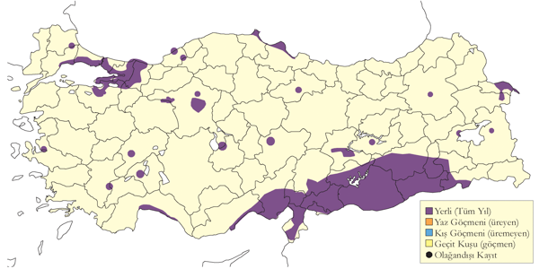
Üreme
İstanbul ve diğer şehirlerde yerleşim alanlarında, Doğu Akdeniz ve Güneydoğu Anadolu’da köyler ve tarım arazilerinde bulunur. Yuvasını bir çalı, ağaç veya bir bina cephesine kurar. Yuvası ince çalılardan yapılmış uyduruk bir platform olur, otlar ve ince bitkisel malzeme ile astarlanır. Aynı yuva yıl içindeki birbirini peşi sıra takip eden kuluçkalar için kullanılabilir. Nitekim bu olgu yuvadaki farklı tabakalar oluşturan yuva malzemeleri ve farklı zamanlardan kalmış dışkı kalıntılarından anlaşılabilir. Yumurta sayısı 2 (1 yuvada). Yavru sayısı 2 (1 yuvada). MAR. İstanbul’da çiftleşen bir çift 28 Mart 1967’de gözlenmiş, 22 Nisan 1970’de bir pencere pervazındaki yuvada oturan bir çift görülmüş ve Temmuz 1968 sonunda yavrusu olan bir çift görülmüştür. AKD. Adana Havaalanı’ndaki bir palmiyede 28 Mart 2000’de bir çiftin yuvaladığı gözlenmiş, Adana şehir merkezinde 18 Mayıs 2004’de yeni palazlanmış bir yavru görülmüştür. GDA. Birecik’te 3 Mayıs 1964’de yuvalayan çoğu çiftin yavrularını beslediği, ancak bir yuvada hala iki yumurta gözlenmiş (Warncke, 1964--65), Halfeti’de 11 Mayıs 2004’de yeni uçmaya başlamış ancak hav tüyleri görülebilen kuşun yaklaşık bir hafta önce yuvadan ayrıldığı düşünülmüş, bunun yakınında yerden 4 metre yukarıda oturulan bir evin dış cephesindeki bir çıkıntısında, yaklaşık 7 günlük iki yavru gözlenmiş ve yumurtlama tarihi 20 Nisan olarak hesaplanmıştır. Aynı yuvanın yıl içinde daha önceden kullanıldığı ve üremenin şubat ve martta başladığı da gözlenmiştir.
Alttürler ve Sınıflandırma
Alttür tayini için inceleme yapılmamıştır. İstanbul’a Tunus’tan getirildiği düşünülen ve çevre bölgelere yayılan kuşlar phoenicophila alttürü olduğu düşünülür. Güneydoğu Anadolu’da ve buradan diğer bölgelere yayılan kuşların nominat alttüre olduğunu iddia etmiştir (Kasparek, 1991).
Kap Kumrusu
Oena capensis, Namaqua Dove
Rastlantısal konuktur.
İlk kez Birecik’in kuzeyinde 23-24 Mayıs 2005’de bir dişi fotoğraflanmıştır. Ardından birer tane 23 Mayıs 2008’de Sinop’ta, 13 Mayıs 2010’da Niğde Çukurbağ’da, 8 Haziran 2012’de Kozanlı Gökgöl’de, 24 Haziran 2012’de Birecik’te ve son olarak 8 Kasım 2014’de Milleyha Antakya’da denizden gelen bir birey fotoğraflanmıştır. İsrail’de Arava vadisinde 1961’den beri yerleşik bir popülasyonun olduğu bilinir (Shirihai, 1996).
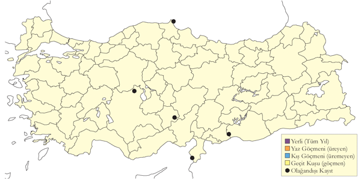
Üreme
Türkiye’de yuvalamaz.
Alttürler ve Sınıflandırma
Türkiye’de nominat alttürü bulunur.
Tepeli Guguk
Clamator glandarius, Great Spotted Cuckoo
Seyrek yaz konuğudur.
Nisan başı ve eylül başı arasında oldukça yaygındır. Ege’de nispeten bol, diğer bölgelerde daha seyrektir. Güneydoğu’da ürediğine dair kısıtlı kayıt vardır. En azından 1200 metreye kadar çıkar. Doğu Anadolu’da ağustos ve eylülde görülen gençler ve az sayıdaki ilkbahar kaydı büyük ihtimalle geçide işaret eder. İlkbaharda hem de sonbaharda göç dönemini ve yoğunluğunu belirlemek kolay değildir, buna rağmen ilkbahar geçişi nisan sonuna kadar devam eder (Kivit et al., 1994).
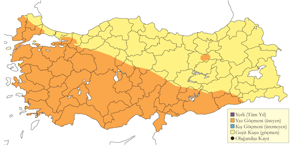
Üreme
Türkiye’de sadece saksağanın paraziti olarak kaydedilmiştir. Bu nedenle üreme takvimi saksağanınkiyle eşzamanlıdır. MAR. Manyas Gölü’nde 25 Mayıs 1967’de gösteri yapan ve bol bol seslenen eşleşmiş bir çift gözlenmiştir. KAR. Kızılırmak Deltası’nda 10-11 Ağustos 1972’de bir genç gözlenmiştir. EGE. Bafa Gölü’nde 25 Haziran 1966’da palazlanmış bir yavru gözlenmiş, Güllük Körfezi’nde 4 Haziran 1971 gibi erken bir tarihte bir genç gözlenmiş, Aydın Akköy çevresindeki tarım arazisinde 23 Mayıs 1993’te bir genç tepeli toygarlar tarafından taciz edilmiştir. İÇA. 8 Mayıs 1945’de içinde beş saksağan ve bir guguk yumurtası olan bir yuva gözlenmiş (Wadley, 1951); Ankara’da bir yuvada 21 Mayıs 1972’de tek bir guguk yavrusu olup ve hiçbir saksağan yavrusu gözlenmiş, Kırşehir’de 14 Temmuz 1977’de içinde iki tane guguk ve bir kırık saksağan yumurtası gözlenmiş, aynı günde yakında başka bir yuvada yeni koyulmuş bir guguk yumurtası olup saksağan yumurtası gözlenmiştir (Schubert, 1979). 7 Ağustos 1967’de bir saksağan sürüsünün içinde iki genç guguk gözlenmiştir. Eskişehir Gordion’da 11 Temmuz 1969’da bir genç gözlenmiş, Ereğli Sazlığı’nda 4 Temmuz 1993’de beraber iki genç gözlenmiştir.
Alttürler ve Sınıflandırma
Monotipik bir türdür.
Guguk
Cuculus canorus, Common Cuckoo
Yaygın ve çok sayıda bulunan yaz konuğudur.
Güneydoğu’da nispeten yereldir. Deniz seviyesinden itibaren 2000 metreye kadar yayılış gösterir, ormanlardan tarım arazilerine kadar farklı yaşam alanlarında ürer, hatta oldukça kurak ve açık arazilerde bile bulunur. Geçit sırasında ülke çapında yaygın olarak görülür. Ülke genelinde nisan başından itibaren, Akdeniz ve Güney Ege’de mart sonundan itibaren görülür. Sonbaharda eylül sonuna kadar kalır. En erken 12 Şubat 2005’de Milas Tuzla Gölü’nde kaydedilmiştir. En geç kayıt 3 Ekim 1993’de Uluabat Gölü’ndendir.
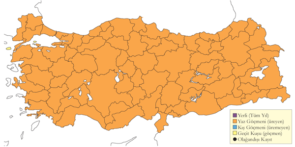
Üreme
Yuva paraziti olarak konak türe göre çok farklı yaşam alanlarında, ormanlar, tarım arazileri, çalılıklar, bataklıklar, hatta çok kurak bölgelerde bulunur. KAR. Kızılırmak Deltası’nda tahmini 70-90 çiftin çoğunlukla Yörükler Ormanı’nda ürediği bulunmuş, nedense olası konak türlerinden saz kamışçınının yüksek sayılarda bulunduğu bataklık alanlarda çok seyrek rastlanmıştır (Hustings & Dijk, 1994). Türkiye dışında dişilerin, büyük olasılıkla kendilerini de yetiştiren tek bir konak türe uzmanlaştıkları bilinir. Bunun Türkiye’de de geçerli olup olmadığı bilinmemektedir. Kızılırmak Deltası’nda Temmuz 1971’de ölü bir genç bulunmuş (Dijksen & Kasparek, 1985). EGE. İzmir’de oturan (McNeile, 1950, 1951, 1954, 1967, 1968, 1970, 1972, 1973) 1950 yılında ak gözlü ötleğenin çalılık arazideki genel konak olduğunu aktarmıştır. 10 Mayıs 1950’de bir yuvada hepsi yeni konulmuş bir guguk ve üç ötleğen yumurtası bulmuş, 26 Mayıs 1951’de terkedilmiş bir yuvada bir guguk ve iki ötleğen yumurtası bulmuştur. Bunun dışında 2 Haziran 1951’de bir çalı bülbülü yuvasında bir guguk ve dört çalı bülbül yumurtası görmüş ve hepsi de sonuna kadar kuluçkaya yatılmıştır. Bunun dışında 28 Mayıs 1951’de konak türü belli olmayan palazlanmış bir yavru gözlemiş, bu yumurtlamanın nisan sonunda olduğunu gösterir. Bu nispeten erken tarih sonraki gözlemlerle de uyumludur; Aydın Altınkum’da 22 Nisan 2002’de iki dişi, yuva yapmak üzere olan kara boğazlı ötleğen çiftlerini takip ederken gözlenmiş, ötleğenler guguklara saldırmış, dolayısıyla gugukların konak yuvası olduklarına kanaat getirilmiştir. AKD. Pozantı’da 4 Ağustos 1967’de bir genç yakalanmıştır. DOA. Ağrı Kağızman’da 16 Ağustos 1972’de kır incirkuşundan yem için dilenen iki genç gözlenmiş, 17 Ağustos 1972’de görünüşe göre bir ak kuyruksallayan tarafından yetiştirilmiş bir genç, Bulanık’ta 1 Ağustos 1986’da bir genç gözlenmiştir. GDA. Gaziantep Işıklı’da 13 Ağustos 1986’da bir genç gözlenmiştir. Bu kayıtlar Türkiye’de bugüne kadar hepsi kurak arazide bulunan beş konak türü tespit etmiş olsa da gerçekte kullandığı konak tür sayısının çok daha fazla olmalı ve hatta kesinlikle sazlıklarda yaşayan saz kamışçını ve büyük kamışçını da dâhil etmelidir.
Alttürler ve Sınıflandırma
Türkiye’de nominat alttürü bulunur.
Peçeli Baykuş
Tyto alba, Western Barn Owl
Yaygın ve yer yer çok sayıda bulunan bulunan yerlidir.
Geniş yayılışlı, olup her türlü düz arazide habitatında görülebilen seyrek bir yerli türdür. Ocak 1992’de Akdeniz’de bir otoyolun 55km’lik bir karayolu kısmında şeridinde kaydedilen 15 ölü kuş, yayılış alanı içerisindeki gerçek bolluğunun en iyi göstergesi olabileceği gibi aç bireylerin gerçekleştirdiği kış göçünün de bir sonucu olabilir (Berk, 1994). daha iç kesimlerden yalnızca 2 kayıt olduğunu belirtmesi (Kasparek, 1986), türün çoğunlukla yukarıda belirtilen bölgeyle sınırlı olduğunun bir göstergesi olabilir. Bu iki kuştan biri 16 Mart 1967’de Sivas’ta (Erard & Etchécopar, 1968) gözlemlenmiş diğeri de Konya’nın kuzeybatısında Ilgın yakınlarında L. J. Dijksen ve F. J. Koning tarafından 18 Ocak 1986’da yolda ölü bulunmuştur. Doğu Anadolu’da 15 Ocak 2006’da Malatya’daki Karakaya Barajı’nda, 15 Ocak 2006’da gözlemlenmiştir. Gözlem tarihleri bu kuşların yerel üreyen bireyler olmayıp yolunu kaybeden ya da dağılan bireyler olduğunun göstergesi olabilir. Bu duruma örnek olarak 3 Kasım 1990’da İç Anadolu’da Sultansazlığı’nda bir birey, Ankara’da 31 Ocak 2000’de bir ve 2004 sonbaharında 3 bireyin kaydedildiği gözlemler verilebilir. Bunun yanında her ikisi de 31 Mayıs 1990 tarihli olan Eşmekaya ve Sultanhanı’ndan gelen kayıtlar türün bu bölgede öncenden düşünülenden daha yaygın olduğu ve muhtemelen de ürediğine yorulabilir (Kirwan & Martins, 1994). Karadeniz Bölgesi’nde oldukça lokal ve nadir olduğu düşünülmekte ve bölgenin birçok kesiminde bulunmadığına dair güçlü kanıtlar bu savı desteklemektedir; örn. Ereğli çevresinde 325 gün süren arazi çalışmalarında bu tür kaydedilmemiştir (Albrecht, 1986). Tür, Türkiye’nin bu bölgesinde sadece İstanbul çevresinde (Kasparek, 1992) ve Kızılırmak Deltası’nda gözlenmiştir (Hustings & Dijk, 1994). Trakya’da gözlem yoğunluğunun az olması sebebiyle muhtemelen gerçek değerinden daha az sayıda kaydedilmiştir. Trakya da dâhil Yunanistan’ın karasal kesimlerinde oldukça geniş yayılışlı ve bol olarak belirtmesi bu durumu desteklemektedir (Handrinos & Akriotis, 1997).
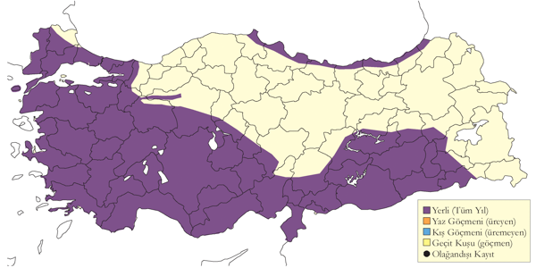
Üreme
Türe ait pelet ve tüyler, yarlardaki mağaralarda, harabelerde, binalarda, tarımsal yapılarda, ağaç kovuklarında (Kasparek, 1986) ve toprak duvarlarında da bulunmuştur. AKD. Çukurova’da 14 Mayıs 1987’de terkedilmiş bir evin tavan arasında üreyen bir çift ve peletlerin üzerine bırakılmış 5 yumurta görülmüştür (Ven, 1980). Gökçeli, Çukurova’da 16 Nisan 1988’de 2 yetişkin bireyin binalara girdiği kaydedilmiştir. Side’de 20 Mayıs 1996’da bir yetişkin bireyin otel çatısındaki yuvasına yem taşıdığı gözlenmiştir. Ağustos 1986’da Ankara hayvanat bahçesine getirilen 7 peçeli baykuşun, Antalya yakınlarındaki Serik’teki bir evin çatısında bulunmuş olup hepsinin aynı kuluçkadan çıkan yavrular olduğu tespit edilmiştir (Kasparek, 1986). Avrupa’da yumurtlama Nisan’da başlayıp, yumurtlamadan palazlanmaya kadar geçen uzanan toplam üreme dönemi üç aydan biraz daha fazla sürmektedir ve türün yılda iki kere ürediği sıklıkla görülebilir. Yumurtalar; 4-7 (2-12) adet yumurta yuva kovuğunun düz zemine herhangi bir materyal malzemeyle örtülmeden eklenmeden bırakılır. Dibinde bir miktar çar çöp olan yuva kovuklarında birlikte döküntülerin olduğu yerlerde, içi çoğunlukla peletle dolu olan alçak bir oyuğun kazıldığına da rastlanmıştır ve peletler de katı malzemenin arasına eklenir.
Alttürler ve Sınıflandırma
Kasparek (1986b) beyaz göğüslü (alba/erlangeri) ve kahverengi göğüslü (guttata) form ya da ırklara alttürlerin ait mevcut yayılışı verilerinin tamamını gözden geçirmiş olsa da somut bir fikre sahip olabilmek için daha fazla veriye ihtiyaç duyulmaktadır. Diğer Çeşitli yazarlar (örn. Bruce in (Roselaar, 1995; Hoyo et al., 1999; König & Becking, 1999) guttata alttürünün Türkiye’de bulunmadığını ve erlangeri’nin ise alttür sayılabilecek derecede ayrıntılı tanımlanmadığını savunmaktadırlar. Kasparek adı geçen yayında kabaca İzmir çevresinden - Manyas Gölü ’ne ve oradan da - Trakya eksininin ’ya uzanan kabaca bir “hibrit (melez) bölge” alttürlerin melezleştiği bir geçiş bölgesinin bulunduğuna kanaat getirmiştir. Beyaz göğüslü kuşların bölgenin kuzey batısında bulunduğunu, kahverengi göğüslülerin Güneydoğu Avrupa’dan (örn. Romanya, Bulgaristan) Marmara ve Ege bölgeleri üzerinden güney sahillerine kadar uzandığını ve beyaz göğüslülerin güney sahillerinin doğusunda ve daha güney doğu kesimlerde tekrar ortaya çıktığını düşünmektedir. Ancak İç Anadolu’daki üreme kayıtları beyaz göğüslü kuşları da içermekte ve Doğu Anadolu’dan gelen tek kaydın (aşağıya bakınız) fotoğraflanıp alba alttürüne ait olduğunun belirtilmesinin yanında, Kızılırmak Deltası’nda gözlemlenen bireylerin hem beyaz hem de koyu göğüslü guttata alttürü olduğu kaydedilmiştir. Güneydoğu ve Doğu Akdeniz kıyılarındaki kişisel gözlemlerimiz de beyaz göğüslü kuşlara ait olup Kasparek’in teorisini desteklemektedir.
Çizgili İshakkuşu
Otus brucei, Pallid Scops Owl
Lokal ve nadir yaz konuğudur.
Küresel üreme yayılışının kıyısında yayılış gösteren bir tür olarak Birecik ve Halfeti arasında en az 3 alanda ürediği bilinmektedir. Bunlardan Nisan 1982’de (van den Berg vd. 1988) türün Türkiye’de ilk kaydedildiği yer olan Birecik’teki çay bahçesi, dünyada türün bulunduğu alanların tartışmasız en meşhurudur. En kuzeyde Halfeti’de Rumkale yakınlarındaki Savaşan’da kaydedilmiş ve son dönemlerde daha da doğuda, Suriye sınırındaki Ceylanpınar’da gözlemlenmiştir. Diyarbakır’da 2003 sonbaharında halkalanan birey, türün bilinen yayılışının daha yaygın olduğunun ya da Orta Asya’daki kuşların Yakın Doğu’daki kışlama alanlarına giderken zaman zaman ülkemizden geçtiklerinin bir göstergesi olabilir. Tür, sene içinde en erken 1 Nisan’da gözlenmiş olup kasım ve mart arasına ait yayınlanmış bir veri bulunmamaktadır; bu sebeple tür yaz konuğu olarak varsayılmaktadır. Bilinen en yakın kışlama alanı İsrail’dir.
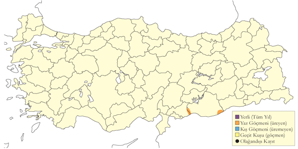
Üreme
Kurak bölgelerdeki ağaçlık alanlarda ürer. Tüm üreme kayıtları özellikle Birecik’teki meşhur çay bahçesi olmak üzere Güneydoğu Anadolu’dan gelmiştir. Fırat Vadisi’nde Birecik’in kuzeyindeki bir meyve bahçesinde ve Halfeti yakınlarında da ürediği bilinmektedir. Yuvalar ağaçlarda yerden yaklaşık 7-10m yüksekliğindeki, yuva materyalinin eklenmediği kovuklarda bulunmakla beraber yurtdışında daha alçak kovukları da kullandığı bildirilmiştir. Bu sebeple türün Birecik çevresinde üreyen bireylerinin gözden kaçtığı ve muhtemelen daha alçak ağaç kovuklarını da kullandığı düşünülmektedir. Aynı ağaç kovuğunun 2 yıl art arda kullanıldığı görülmüştür. Halfeti’deki bir kavak ağacında yerden 8 m yükseklikte bulunan eski bir Küçük Serçe yuvasına yuvaladığı da kaydedilmiştir (van den Berg vd. 1988). Ayrıca Birecik’te 29 Mayıs 1985 tarihinde eski bir leş kargası yuvasını kullanmış olduğu düşünülmüş, ama kanıtlanamamıştır. Diğer yerlerde yumurta sayısı 4-6 arasındadır. Yavru sayısı: Yuva dışında 2 (2 yuvada), 3 (4 yuvada), 4 (3 yuvada), 5 (2 yuvada). 1988’den önceki birçok kayıt van den Berg vd. (1988) tarafından derlenmiştir. Çiftleşme 11 Nisan 1982’de, 12 Nisan 1984’de ve bir erişkinin diğerine yemek getirip diğerinin yuvaya girdiği de 3-5 Mayıs 1987’de gözlemlenmiştir. Halfeti’de 15 Nisan 1987’de bulunan bir yuvada kuluçka dönemi muhtemelen 28 Nisan 1987’da başlamıştır. 1-2 Haziran 1988’de her iki erişkin bireyin de ağaç kovuğuna yemek taşıdığı kaydedilmiştir. Palazlanmış genç bireylerin 2 Temmuz 1971 (2 adet), 2 Temmuz 1985 (4 adet), 9-11 Haziran 1986 (4 adet), 4 Temmuz 1987 (4 adet), 1988 Temmuz başı (4 adet ayrıca 19 Haziran 1988’de de görülmüştür: M. Telfer) tarihlerinde kaydedilmiş olması, yumurtlamanın en geç 25 Nisan’da gerçekleşmiş olduğunu göstermektedir. 30 Haziran 1984’de 2 erişkin ve 3 yavru birey, 1986’da yapılan 3 gözlemde de muhtemelen hepsi aynı kuluçkaya ait olan azami 5 yavru birey kaydedilmiştir. Van den Berg vd. 1986 yılında 4 yavruluk bir aile kaydetmiştir. 1989’de bir erişkin bireyin yuva kovuğuna girişi 7 Mayıs, her iki erişkin 22 Mayıs ve 2 yavru da 24 Haziran’da gözlenmiştir. 1996 Haziran’ı ortasında incelenen bir yavrunun gelişiminin yarıdan fazlasının tamamlamış olması, yumurtlamanın mayıs başında gerçekleşmiş olduğunu göstermektedir. Palazlanmış genç bireylerin gözlemlendiği tarihler şöyledir; 29 Temmuz 1992 (bir adet), 25 Haziran 1994 (en fazla 4 adet), 2 Temmuz 1999 (üç adet), 26 Haziran 2001 (üç adet) ve 3 Temmuz 2004 (üç adet). Kayıtlar, yurtdışında da olduğu gibi türün senede bir kez yumurtladığını göstermektedir.
Alttürler ve Sınıflandırma
Türkiye’de bulunan alttürün obsoletus olduğu düşünülür. Mlikovsky ve Frahnert (2009, Zootaxa 2297: 15-26) bu taksonun isimlendirilmesi ve alttürleri hakkındaki en ayrıntılı çalışmayı yapmışlar, buna göre türün nominat brucei ve semenowi olarak sadece iki alttürde sınıflandırılmasını önermişlerdir. Buna göre obsoletus alttürü nominat alttürün sinonimi olur.
İshakkuşu
Otus scops, Eurasian Scops Owl
Yaygın ve çok sayıda bulunan yaz konuğudur.
Açık dağlık, ormanlık alanları ve genellikle de sık habitatı tercih eder ve Güneydoğu Anadolu Dağları’nda en az 2300 m irtifaya kadar ürer. Güney kıyılarında en erken göç eden bireyler mart sonunda (21) görülüp ve nisan sonunda da çoğunun geçmiş olduğu bilinmektedir. Örnek olarak kuzeydoğu sınırımızdan nisan ortasında kaydedilen birey verilebilir (Faldborg, 1994). Sonbaharda göçmenler İstanbul çevresinde ağustosun 2. yarısından itibaren görülmeye başlarlar ve son göçmenler güney kıyılarını genellikle en geç eylül ortasında terk etseler de Akdeniz’de 14 Ekim tarihli bir kayıt mevcuttur. Son günlerde türün az sayıda da olsa orta Ege’de Burhaniye yakınlarında kışladığı ortaya çıkmıştır (Eken, 1997b) ve bu tür keşiflerin komşu bölgelerde de gerçekleşmesi beklenmektedir.
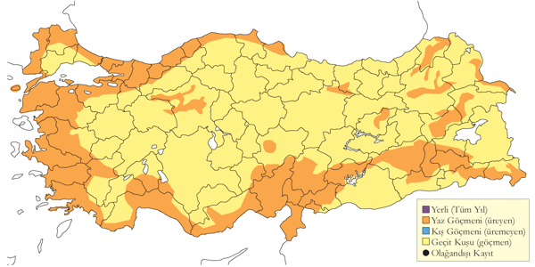
Üreme
Plantasyonların bulunduğu açık ormanlık arazilerde, yarlar da dâhil kayalık dağlık alanlarda ve köy hatta şehir yakınlarında dahi üreyebilmektedir. Yar ve duvarlardaki kovuklara, diğer kuşların doğal ve suni eski yuvalarına yuvalayabilmektedir. Ağaç ve binalardaki (özellikle kiremit aralarına) oyuklara da yuvalıyor olduğu bilinse de Türkiye’de böyle bir kayıt yoktur. Yuva, materyal bulunmayan boş bir oyuktan ibarettir. EGE. Tring Doğa Tarihi Müzesi’nde bulunan yumurtalar İzmir yakınlarından toplanmıştır: 12 Mayıs 1870’de bir yuvadan 4 yumurta, 12 Mayıs 1872’de tamamlanmamış bir yuvadan 2 yumurta, 1 Haziran 1872’de 4 yumurta ve 20 Haziran 1878’de tamamlanmamış bir kuluçkadaki tek yumurta toplanmıştır. AKD. 28-29 Nisan 1970’de Aladağ’da bir kaya yüzündeki yuvaya, muhtemelen kırmızı gagalı dağ kargasına ait eski bir yuvada tünemiş erişkin bir birey ve 17-23 Temmuz 1971’de Maden’de de 1700 m’deki bir duvarda bulunan yuvada 2 yavruyu besleyen bir çift kaydedilmiştir. İÇA. Ankara yakınlarında 1976-1985’de suni yuvaların kullanıldığı bir çalışmada her yıl 2-4 çiftin ürediği, ortalama yoğunluğun 0.27 üreyen çift/ha ve ortalama kuluçkanın (7 yuvaya ait) 3,7 yumurta olduğu ve çift başına 3,3 yavrunun palazlandığı kaydedilmiştir (Kiziroğlu & Kiziroğlu, 1987). İç Anadolu’nun başka bir kesiminde bulunan Sultansazlığı’nda 22 Haziran 1983’de görülen palazlanmış 3 yavru (Kasparek, 1985), yumurtlamanın nisan sonunda gerçekleşmiş olduğunu göstermektedir.
Alttürler ve Sınıflandırma
Türkiye’nin kuzeyinde nominat alttür, güneyde ise cycladum alttürü gözükmektedir. Kıbrıs’a endemik cyprius alttürü de gelebilir. Ayrıca Irak sınırında turanicus alttürü de bulunabilir. Bunların hepsinin seslerinde benzerlik yüksektir.
Puhu
Bubo bubo, Eurasian Eagle-owl
Muhtemelen yaygın, ancak nadir yerlidir.
Tüm ülke boyunca kayalık alanlarda seyrek olarak bulunan yerli bir tür olsa da Karadeniz kıyıları ve Trakya’dan sadece 4 kaydı vardır: 4 Ekim 1970’de Çamlıca Tepelerinde, 24 Ocak 1998’de İstanbul Tuzla yakınlarında, 3 Kasım 2003’de ve daha sonra da 4 Ekim 2004’de Terkos Gölü’nde birer birey görülmüştür. Deniz seviyesinden (Yumurtalık, Akdeniz) yüksek dağlara (örn. Demirkazık, Akdeniz ve Nemrut Dağı, Doğu Anadolu) kadar her irtifada bulunabilmektedir. Özellikle İç Anadolu’daki sulakalanlar çevresinde olmak üzere kış aylarındaki kayıtların fazlalığı, muhtemelen irtifa göçü ve üreme öncesi aktivite artışına işaret etmektedir. Göksu Deltası yakınlarındaki kanyonlarda yüksek yoğunlukta kaydedilmelerine ve birçok bölgede gözlemci sayısının artmasına rağmen özellikle türün nadir olmadığı İç Anadolu başta olmak üzere birçok bölgeden gelen kayıt sayısında azalma görülmüştür. Eğer popülasyonda gerçekten de bir azalma mevcut ise bunun başlıca sebeplerinin takip etme ve silahla ateş etme ve araç çarpışması sebepli ölümler olması muhtemeldir.
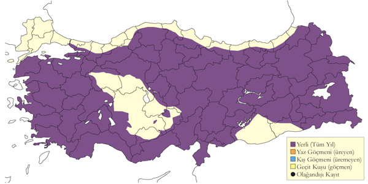
Üreme
Yarların ve kayalık kanyonların olduğu bölgelerde, hem ormanlık hem de kurak, ağaçsız vadiler ve dağ geçitlerinde üreyebilir. biri kayalık bir dağ geçidinde, diğeri ise çam ve meşeliklerle kaplı bir vadideki mağarada olmak üzere 2 yuva bulmuştur (Danford, 1880). Yuvasını yarlardaki mağaralara, oyuklara veya çıkıntılara yapar. Ağaçlarda diğer kuşların eski yuvalarına ya da doğal kovuklara yuvaladığına dair Türkiye’den kayıt yoktur. Yuva materyali kullanmadığı yuvasının zeminini bir miktar kazar. Türkiye’de gözlenen yumurta sayısı 2 (1 yuvada), 3 (1 yuvada). Yavru sayısı: Yuvada 2 (4 yuvada), 3 (1 yuvada); yuva dışında Birecik’teki ünlü alanda: 1 (3 yuvada), 2 (1 yuvada), 3 (1 yuvada). MAR. 24 Mayıs 1993’te Kocaçay Deltası yakınlarındaki dik yamaçta 2 yavru (Ertan, 1996). AKD. 1999’da Ağustos ayında Fethiye yakınlarındaki Girdev Gölü’ndeki 2 büyük yavrunun halen yuvada olduğu kaydedilmiştir. İÇA. Danford (1880) 1879 Nisan başlarında Ankara yakınlarında ve 1879 Nisan ortalarında Eskişehir’de yumurta içeren yuvalar bulduğundan ve bunların rahatsız edilmediğinden bahsetmektedir: Kayseri yakınlarında bir puhunun 7 Mayıs 1876’da yuvaladığı görülmüş olsa da (Danford, 1877-78)Tring Doğa Tarihi Müzesi’nde bulunan Danford tarafından Kayseri yakınlarından topladığı belirtilen 2 yumurtanın 28 Mart 1879’da yukarıda bahsi geçen diğer yuvalardan alındığı muhtemeldir. 8 Mayıs 1964’de Karapınar yakınlarında bir kraterdeki yar üzerine yapılmış yuvada bulunan, 10-14 günlük yavrular (Warncke, 1964--65), yumurtlamanın mart ortasında gerçekleşmiş olduğunu göstermektedir. 15 Haziran 1997’de Sarıyar Barajı yakınlarındaki bir yuvada 3 yavru bulunmuştur (Boyla & Eken, 1998). 15 Mayıs 1980’de Kızılcahamam yakınlarında gözlemlenen bir erişkin bireyin, 3 defa (birinde yemek taşıyarak) küçük bir vadiye girdiği görülmüştür (Barış et al., 1984). 30-31 Temmuz 1981’de Ereğli’de bir yuvada yavruların sesleri duyulmuştur. 30 Mayıs 1998’de Yeşilhisar’da bir erişkinin birçok pelet içeren boş fakat muhtemel bir yuvadan havalandığı görülmüştür. Yine bir erişkinin 24 Mayıs 1993’de Hotamış’a bakan bir yardaki çıkıntıdan, muhtemelen bir yuvadan havalandığı kaydedilmiştir. DOA. 30 Mayıs 1989’da Van yakınlarında 2 erişkin ve 4 yavru. 21 Mayıs 1985’de Erçek yakınlarındaki bir kanyonda erişkin bir çift ve yeni yumurtadan çıkmış 2 yavrusu gözlemlenmiştir. GDA. Birecik’te 1989-1999 arasında birçok üreme kaydı vardır: 1992, 1997 Mayıs başları ve 1999 Nisan başlarında erişkinlerin kuluçkada ya da yuvada yeni doğmuş yavrularıyla birlikte, haziran başına kadar yuvada yavru, en erken palazlanan yavrunun 22 Mayıs’ta görülmesi. Yavruların yuvayı daha tam anlamıyla uçmayı öğrenmeden 6-10 hafta sonra terk ettiğinin kaydedilmesi yumurtlamanın mart başı ya da en fazla 4 hafta daha erken gerçekleşmiş olduğunu göstermektedir. 10 Temmuz 1986’da Gaziantep Işıklı’da bir erişkin ve yavru. Tring Doğa Tarihi Müzesi’nde bulunan 3 yumurta 17 Mart 1902’de Türkiye’nin batısından toplandığı belirtilmektedir. Erişkinler yavrularına 1 yıl boyunca bakarlar.
Alttürler ve Sınıflandırma
Türkiye’de bulunan alttürü interpositus olarak anılmaktadır.
Balık Baykuşu
Ketupa zeylonensis, Brown Fish Owl
Lokal ve nadir yerlidir.
19. yüzyılda kesin kayıtları olan bir türün uzun zaman yok olduğu düşünülüyordu.
Türün Türkiye’deki varlığının diğer bir güncel kanıtı ise 1990 Nisan sonunda, Ceyhan Nehri üzerinde Kahramanmaraş il sınırlarında çok derin bir kanyonda bulunmuş ve oltaya takılmış bir balığı yutmaya çalışırken yakalanan bu bireyin fotoğrafı Haşim Kılıç tarafından çekilmiştir (Magnin, 1991; Ebels, 2002). Kuş yakalandığı noktadaki nehrin yatağında 20km uzakta 1 hafta sonra salınmış ve bu süre zarfında kuşun beslenmediği görülmüştür. Magnin doğal çam ormanları ve nehir kenarı vejetasyonundan oluşan habitat ve mevkiyi incelemek için alanı 22-23 Haziran 1990’da tekrar ziyaret etmiş ve oradaki bir balıkçıyla yaptığı görüşmede balıkçının 20 yıl önce aynı türe ait bir bireyi, en son yakalandığı alandan akıntı yönünde yaklaşık 1km uzakta vurduğunu öğrenmiştir. Kanyona Berke Barajı’nın yapılmasıyla orada yaşama ihtimali ortadan kalkmıştır.
Antalya’da yakınında Ekim 2004’te fotoğrafları çekilen bir çift tekrar bir ümit ışığı olmuştur (Yöntem, 2007). Ardından Haziran 20 Haziran 2009’da Antalya çevresinde Arnoud B. van den Berg ve Cecilia Bosman bu tür olduğunda şüphelendikleri bir kuş gördüler. Bu şüphe yöredeki insanlardan gelen bilgilerce teyit edilmekteydi. Bunun üzerine alana giderek araştırma yapan Soner Bekir ve Murat Çuhadaroğlu 3-5 Temmuz 2009’da toplam 6 kuş ve üreyen bir çift buldular (Dutch Birding 31: 268-270). Ardından Soner Bekir ve ekibi Mart ve Haziran 2010’da güneydeki uygun alanların çoğunu ziyaret ederek kapsamlı bir çalışma gerçekleştirdiler. Buna göre Türkiye’de birçok lokalitede yaşadığını ortaya çıkarmış oldular (Dutch Birding 32: 210). Bunun ötesinde türün biyolojisi, sesleri hakkında toplanan verilerle bu popülasyonun Hindistan’da yoğunlaşan ana popülasyonundan ne kadar farklı olduğu tartışılmıştır (van den Berg vd. 2010).
Türün ilk kayıtları, güneyde çalışan bir koleksiyoncu olan G. Schrader’in elinde türe ait 4 örnekten gelir; bunlardan üçü Mersin yakınlarındaki ağaçlık dağ geçitlerinden diğeri ise Aydın yakınlarındaki derin bir dağ geçidinde 19. yy. sonlarında bulunmuştur (Kumerloeve, 1961). Kumerloeve Haziran 1953’te Ceyhan nehri vadisinde Haruniye ve Dumanlı Dağı arasındaki doğal ormanda türe ait olduğunu düşündüğü peletler bulmuştur (Kumerloeve’nin pelet içinde tanımlandığı tatlı su salyangozu (Potamon fluviatile) puhu için olağandışı bir besin olsa da bu gibi bir durum nadir de olsa daha önceden de kaydedilmiştir). Adana’daki kuş pazarında türün görüldüğünü belirtmektedirler (Hollom et al., 1988) fakat bu durum bir yanlış anlama olabilir (Magnin, 1991). Rothmann vd. ait Silifke’deki gözlemlerden bahsetmektedir (Kumerloeve, 1970a). Bu gözlemlerde bireyin 3 Mayıs 1965’te Tamarix ve lagün (büyük ihtimalle Akgöl) kıyısındaki diğer çalılarda, 3 Mayıs 1967’de ise aynı alanın 4 km kuzeyinde Salicornia üzerinde görüldüğünden bahsedilse de günümüzde güney kıyılarımızda oldukça yaygın olan puhunun da hesaba katmak gerekmektedir (Winden & Berk, 1997).
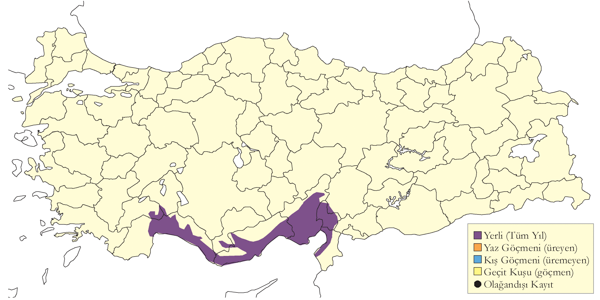
Üreme
Türkiye’den veri bulunmamaktadır. Yurtdışında su kenarında kayalık ya da ormanlık arazide, ağaç üzerine ya da kovuğuna, yarlardaki çıkıntılara ya da oyuklara veya nadiren büyük bir çubuğun üzerinde bulunan diğer türlere ait yuvalara yuvaladığı kaydedilmiştir. Üremesinin birçok yönü bilinmemektedir. İran’ın Hürmüzgan eyaletinde Sirik’te daha önceden 18 Ocak 2004’te bir çiftin görüldüğü bir vadide 8 ve 16 Nisan’da bir erişkin ve bir yavru gözlenmiştir (Balmer & Betton, 2004b).
Alttürler ve Sınıflandırma
Türkiye ve doğuda Pakistan’a kadar uzanan daha açık, devetüyü rengine çalan ve kırçılları daha az belirgin olan semenowi alttürü bulunur.
Alaca Baykuş
Strix aluco, Tawny Owl
Yaygın ve çok sayıda bulunan yerlidir.
Çoğunlukla ormanlık alanlarda bulunmasına rağmen, Nemrut Dağı ve Tuz Gölü’nden gelen kayıtlar göstermektedir ki kurak bölgelerde bu tür habitatlara muhtaç değildir. Deniz seviyesinden (örn. Fethiye, Çukurova) ağaç sınırına (Uludağ) kadar geniş bir irtifa aralığında bulunabilir. Uygun habitatlara sahip alanların çoğu kuş gözlemcileri tarafından nadiren ziyaret edilmesinden dolayı sayılarının şu an bilinenden daha fazla olması muhtemeldir. Akdeniz, Ege, Karadeniz ve Marmara’nın kıyı kesimlerinde önemli sayılarda yoğunlaştıkları görülmektedir. Fethiye ve Çakırlar (Antalya’nın 10km batısı) arasındaki 8 farklı alanda kaydedilen 11 birey, türün uygun habitattaki gerçek yoğunluğunun bir göstergesi olabilir. Tür Doğu ve Güneydoğu Anadolu’da yalnızca Van çevresi ve Kemaliye, Işıklı, Birecik, Nemrut Dağı ve Güreniz’de kaydedilmiştir.
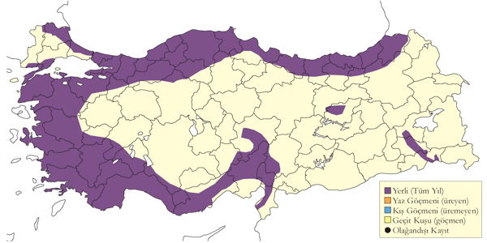
Üreme
Genellikle iğne ve geniş yapraklı ormanlık alanlarda bulunmakla birlikte, daha açık alanlarda yar ve kayalarda da görülebilmektedir. 1992’de Kızılırmak Deltası’ndaki popülasyonunun 30-40 çift (Hustings & Dijk, 1994), 1993’de Kocaçay Deltası’ndaki alüvyal orman popülasyonunun 15-20 çift olduğu tahmin edilmektedir (Ertan, 1996). Ağaç kovuğu ya da kaya oyuğuna yaptığı yuvası bir çukurdan ibaret olup herhangi bir yuva materyali kullanmaz. Diğer yerlerde kuluçka büyüklüğü genellikle üçtür (2-4). Yavru sayısı bilinmemektedir, fakat bir kuluçkadan en fazla 3 yavrunun palazlanabildiği görülmüştür. AKD. 12 Haziran 1992’de Uzuncaburç yakınlarındaki bir mağaranın tavanında bulunan ve yavru sesleri gelen bir delikten 2 erişkinin havalandığı görülmüştür. 20 Mayıs 1991’de Tarsus bölgesinde bir erişkin bireyle palazlanmış yavrusunun görülmesi, yumurtlamanın mart ortasında gerçekleşmiş olduğunun bir göstergesidir. 8 Haziran 1993’te Taşucu’nun batısında 1, 11 Haziran 1989’da Taşağıl’da 2 ve 4 Temmuz 1986’da Akseki yakınlarında 1 adet palazlanmış yavru kaydedilmiştir. KAR. Kızılırmak Deltası’ndaki bir yuvanın yakında 13 Mayıs 1992’de bir çift, aynı yuvada 8 Haziran 1992’de bir yavru (Hustings & Dijk, 1994) ve 12 Mayıs 1991’de de 3 yavru gözlenmiş olması, yumurtlamanın en geç 10 Mart’ta gerçekleşmiş olduğunu işaret etmektedir. MAR. 21 Mayıs 1999’da Kocaçay Deltası’nda ebeveyn ve yavruların kaydedilmesi, yumurtlamanın mart ortalarında gerçekleşmiş olduğunun bir göstergesidir. EGE. 10 Haziran 1981’de Bafa Gölü’nde bir yavru birey gözlenmiştir. GDA. 28 Mayıs 1991’de Birecik’te ise en az 4 bireylik bir aile kaydedilmiştir.
Alttürler ve Sınıflandırma
Türkiye’nin orta ve batı kesimlerinde sylvatica, kuzeydoğu kesimlerinde ise willkonskii alttürü görülmektedir. Clanceyi alttürünün Anadolu için bahsedilmesi şüphesiz bir hata olmakla birlikle bu alttürün sylvatica ile eş anlamlı olarak düşünülmesi en doğrusu olacaktır. Sanctinicolai alttürü güneydoğu sınırında bulunabilir (Roselaar, 1995).
Kukumav
Athene noctua, Little Owl
Yaygın ve çok sayıda bulunan yerlidir.
Karadeniz kıyıları dışında, ülkenin çoğu yerinde, bol bulunan yerli bir türdür. Yoğun ormanlık alanlar dışında, ağaçsız stepler de dâhil her türlü habitatta bulunabilmesi sebebiyle Türkiye’de en yaygın olarak görülen baykuş türüdür. Deniz seviyesinden, Doğu Anadolu’da 3300m’ye kadar geniş bir irtifa aralığında görülebilir. Kış aylarında İç ve Güneydoğu Anadolu’da otoyolların çevresinde bulunan direk ve çatılarda sıklıkla görülebilir: örn. 3 Aralık 1969’da Diyarbakır-Bitlis arasındaki 300km’lik otoyol boyunca 33 adet sayılmıştır.
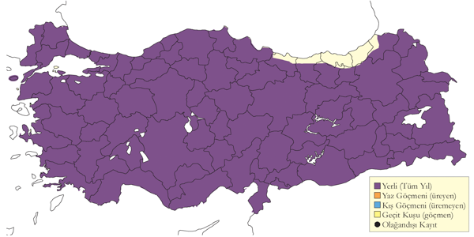
Üreme
Çoğunlukla kayalık olan açık alanları, plantasyonları ve köy çevrelerini tercih eder, yoğun ormanlık alanlarda bulunmaz. Yuvasını ağaç ve yarlardaki oyuklara, taş birikintilerine, duvarlara, kuyulara, binalara, harabelere ve diğer kuşların yuvalarına yapar. Yumurtalarını oyuğun zeminine bırakır ve desteklemek için materyal kullanmaz. Yumurta sayısı 5 (2 yuvada). Yavru sayısı: 3-4 (2 yuvada), en fazla 5 adet palazlanmış yavru gözlemlenmiştir. EGE. 9 Mayıs 1950’de İzmir yakınlarında saksağan yuvasına bırakılmış 5 taze yumurta bulunmuş ve 25 Mayıs 1950’de ise ters dönmüş bir yalağın altında görülen 5 yumurtanın içinden yavru seslerinin geldiği kaydedilmiştir (McNeile, 1950, 1951, 1954, 1967, 1968, 1970, 1972, 1973). 20 Haziran 1993’te Pamucak’ta görülen palazlanmış 2 yavru, yumurtlamanın nisanın son haftasında gerçekleşmiş olduğunu göstermektedir. MAR. 5 Nisan 1967’de Manyas Gölü yakınlarında bir çiftin kur gösterisinde bulunduğu, birbirlerinin tüylerini düzelterek karşılıklı öttükleri gözlenmiştir. İÇA. 30 Mayıs 1998’de Sultansazlığı’ndaki bir yuvada büyümesini tamamlamış bir yavrunun, 20 Mayıs 1970’de da Şereflikoçhisar’da 3 haftalık 3 yavrunun görülmüş olması yumurtlamanın mart sonu nisan başında gerçekleşmiş olduğuna işaret etmektedir. 21 Haziran 1990’da Ereğli Sazlıkları yakınında yeni palazlanmış 5 yavru ve 18 Haziran 1996’da Alaçatı’da palazlanmış 2 yavrusunu besleyen bir erişkin birey gözlenmiştir. 21 Nisan 2004’de Ereğli yakınlarındaki bir kuyuda bulunan yuvanın girişinde bir erişkin kısa süreliğine belirmiştir. GDA. 21 Mayıs 1935’de Gaziantep yakınlarındaki bir yuvada 4 yavru (Bird, 1937) ve Haziran başında Halfeti yakınlarında da palazlanmış bir yavru gözlemlenmiştir. DOA. Van yakınlarında kaydedilen seslenen bir erişkinin 20 Haziran 2004’te bir köpeğe, 26 Haziran 2004’te de bir kediye saldırma sebebi muhtemelen, yakında bulunan büyük bir duvardaki yuvasını ve görülmeyen yavrusunu koruma içgüdüsüdür. KAR. Ereğli’de 14 Şubat 1977’de çiftleşen bir çift (Albrecht, 1977) ve mayıs başında da yuvalarında bulunan 3 ayrı çift gözlemlenmiştir.
Alttürler ve Sınıflandırma
Ülkenin çoğunda indigena alttürü bulunmakla birlikte güneydoğuda onun yerini gövde altı daha az çizgili, art kafasındaki çehresi daha belirgin ve oldukça soluk kum kahverengi renge sahip olan lilith alttürü almaktadır. Lilith alttüründeki kuşların Türkiye’nin güneydoğu kesiminin çoğunda görülmekte, kuzeyde Diyarbakır ve Bitlis civarı hatta Van Gölü’nün kuzeyinde en az Bulanık’a kadar uzanmakta fakat Karadeniz’in dağ eteklerinde ve Akdeniz’de de indigena alttürü ile yer değiştirmektedir.
Paçalı Baykuş
Aegolius funereus, Boreal Owl
Lokal ve nadir yerlidir.
Türkiye’de ilk olarak 1979’da keşfedilmiştir.
Eski kayıtların tümü tesadüfi olarak elde edilmiştir. Yakın zamana kadar türe özel araştırmalar gerçekleştirilmemiştir ve türün en kolay tespit edilebildiği mevsimlerde (mart-mayıs ve ekim) ilgili habitatlarda hemen hemen hiçbir arazi çalışması yapılmamıştır.
Kayıtlar şöyledir: 15-16 Haziran 1979’da Uludağ’da öten bir birey (Mertens, 1981), 20-27 Haziran 1981’de Kızılcahamam’da öten bir birey (Barış et al., 1984), 15 Eylül 1986’da Sivrikaya’da (Martins, 1989), 21 Haziran 1990’da Sümela ile Maçka arasında (Kirwan & Martins, 1994), 15 Mayıs 1998’de Yuğluk Dağı’nda Güzeller’de öten iki birey, 13 Mart 2000’de Kocaçay Deltası’nda (Kirwan et al., 2003), 23-27 Mayıs ve 13-14 Haziran 2002’de Sivrikaya’da gece boyunca öten bir birey (Dutch Birding 24: 241 ve M. Robb), 7 Ekim 2003’te Bolu civarında Aktaş Vadisi’nde öten bir birey duyulmuştur (Demirci, 2003). 8 Ağustos 2004’te Fırtına Vadisi’nin yukarı kesimlerinde yaklaşık 1800 m’de Elevit’in 1 km kuzeyinde ölü bir birey fotoğraflanmıştır ve 18 Eylül 2004’te Kızılcahamam’da bir birey gözlenmiş ve sesi kaydedilmiştir (Balmer & Betton, 2005a; Şekercioğlu, 2006). Şubat 2001’de Toroslar’ın batısından başka bir kayıtla ilgili ayrıntılar hâlihazırda bekletilmektedir. Ardından 5 Haziran 2010’da Ünye’de öten bir birey duyulmuştur. En yüksek sayı 11 Haziran 2010’da kaydedilen Bolu’da kaydedilen 5 bireydir. 11 Haziran 2010’da Çamlık ve İkizdere arasında dört tane, 14 Aralık 2010’da Rize’de bir tane kaydedilmiştir.
Son yıllarda Bulgaristan’da daha yaygın ve hatta epeyce bol olduğunun keşfedilmesi (Nankinov, 1996; Shurulinkov & Ilieva, 2003) dikkate alındığında Trakya’nın kuzeydoğusundaki yüksek kesimlerde neredeyse kesinlikle bulunması gerektiğini varsaymak mantıklıdır.
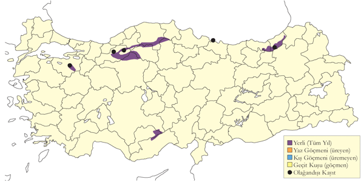
Üreme
Uludağ’da 27 Temmuz 2010’da palazlanmış bir gencin ilk canlı fotoğrafı çekilmiştir ve dolayısıyla ilk üreme kaydı alınmıştır. Yayılışının güneyindeki diğer alanlarda nisan ortasında üremeye başlar ve kara ağaçkakanınkiler dâhil ağaçlardaki deliklere yuva yapar. Deliğin zeminine hiç yuva malzemesi koymaz ve 3-6 yumurta yumurtlar.
Alttürler ve Sınıflandırma
Türkiye’deki formu bilinmemektedir. 2004 yılında ülkenin Sivrikaya’da bulunan ölü bireyin fotoğraflarında, üst kısımları çok koyu olduğuna dayanarak caucasicus alttürünün en azından Karadeniz’in en doğu ucuna kadar sokuluyor olduğu düşünülebilir. Nominat funereus alttürü batı ve güney bölgelerde bulunabilir (Roselaar, 1995). Bu konuda daha fazla araştırma yapılması gerekmektedir. Ülkenin kuzeydoğusundaki Kafkas formları ile batı ve orta Anadolu’daki Avrupa formları ile benzer bir biyocoğrafi desen başka birçok türde görülür.
Kulaklı Orman Baykuşu
Asio otus, Long-eared Owl
Yaygın ve nispeten çok sayıda bulunan bulunan yerli bir tür; ayrıca dağınık bir kış konuğudur.
Ülkenin büyük bölümü boyunca sık rastlanılan yerli ve yerine göre kış göçmeni statüsünde bir türdür. Doğu Anadolu’da nispeten yerel olarak bulunur. Dağınık bir yayılışı vardır. Orman, plantasyon park ve bahçe gibi her tür ağaçlık habitatta bulunur. Başlıca üreme alanları İç Anadolu, Marmara’nın güneyi ve Ege olarak görülse de Akdeniz, Güneydoğu Anadolu ve güneyde Van Gölü havzasına kadar Doğu Anadolu’nun kuzey kısımlarında da lokal olarak yaygın olabilir (örneğin Rize [S. Ekşioğlu]). Kışlayan gruplara sık rastlanılır ancak kuzeyli hareketleri de içeren butoplulukların sayıları 20 bireyi nadiren aşar. 27 Şubat 2000’de Eymir Gölü’nde gözlenen 39 birey ve Ekim 2003 sonlarında Erzurum Atatürk Üniversitesi’nde gözlenen 30 birey türe ait kalabalık gruplardan sadece ikisidir.
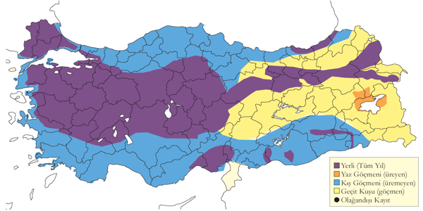
Üreme
Plantasyonlar ve meyve bahçeleri dâhil çoğunlukla ağaçlık alanlarda ürer. Başta saksağan olmak üzere diğer türlerin yerden 3-5 metre yükseklikteki (5 yuvada) eski yuvalarını kullanır, büyük olasılıkla leş kargası ve ekin kargası gibi türlerin daha yüksekteki yuvalarını da kullanmaktadır. Ayrıca, Uluabat Gölü’ndeki bir adada yerdeki alçak bir çalının altında yuva yaptığı da kaydedilmiştir (Welch & Welch, 1998b). Yuvada hiçbir malzeme kullanmaz, ve yuva bir çukuru andırır gibidir. Türkiye’de gözlenen yumurta sayısı 2 (1 yuvada), 3 (1 yuvada), 5 (1 yuvada). Yavru sayısı (yuvada): 2 (2 yuvada), 3 (3 yuvada), 4 (2 yuvada). Tüylenmiş yavru kayıtları çoğunlukla bir (olasılıkla daha büyük bir kuluçkanın parçası) (8 yuvada) ve iki (4 yuvada) bireye işaret etse de beş (1 yuvada) ve altı (2 yuvada) yavrulu yuvalar da kaydedilmiştir. Olağan kuluçka büyüklüğü 2-6 yumurta gibi görünmektedir. Diğer yerlerde 4-5 (3-8) yumurtadır. AKD. 10 Mayıs 1964’te Ceyhan’da yumurtlamanın nisan başı kadar erken olduğunu gösteren üç küçük yavrulu bir yuva bulunmuştur (Warncke, 1964--65). 18 Mayıs 1988’de Çukurova’da yumurtlamanın martın son haftasında olduğunu gösterecek şekilde tüylenmiş bir yavru gözlenmiştir. İÇA. Mart 1977 sonunda ve 21 Mayıs 1970’de yumurtalı yuvalar kaydedilmiş ve 15 Mayıs 1993’te Kulu Gölü yakınlarındaki geç bir yuvada iki yumurta görülmüş ve bu yumurtalar 30 Mayıs’a kadar çatlamamıştır. 22 Nisan 2004’te Eşmekaya’da üç ve beş yumurtalı iki yuva bulunmuştur. 22 Nisan 2004’te Şereflikoçhisar’da yumurtlamanın mart başında olduğunu gösteren yaklaşık iki haftalık üç yavrulu bir yuva bulunmuştur. Eşmekaya’da bulunan iki yuvada 30 Mayıs 1993 ve 25 Haziran 1992’de tüylenen yavrular yumurtlamanın nisan ve mayıs başlarında olduğunu gösterir. 22 Haziran 1982’de ve 25 Mayıs 1983’te Sultansazlığı’nda tüylenmiş yavrular gözlenmiştir (Kasparek, 1985). Ankara Akyurt civarında doğan yavrular Haziran’ın ilk günlerinde yuvadan uçmuş ve geniş bir alanda kendilerini göstermeye başlamıştır (B.Demirci). MAR. 2 Haziran 1998’de Uluabat Gölü’nde yumurtlamanın nisan sonunda olduğunu gösteren dört küçük yavrulu bir yuva kaydedilmiştir (Welch & Welch, 1998b). 14 Mayıs 1969’da Manyas Gölü’nde bir yuvanın dışında iki yavru ve suyun içinde ölmüş başka bir yavru görülmüştür (R.F.Porter). DOA. 7 Haziran 1984’te Van’daki bir yuvada yumurtlamanın nisan ortasında olduğunu gösterecek şekilde hemen hemen uçmaya hazır iki yavru kaydedilmiştir. GDA. Hepsi Birecik’te olmak üzere 4 Mayıs ve 20 Mayıs 1986’da yavrulu yuvalar ve mayıs ortasından itibaren de 15 tüylenmiş yavru kaydı vardır.
Alttürler ve Sınıflandırma
Türkiye’de nominat alttürü bulunur.
Kır Baykuşu
Asio flammeus, Short-eared Owl
Nadir üreyen, lokal ve az sayıda kış konuğudur.
Ülke genelinden nadir olarak geçiş yapan, Batı ve İç Anadolu’da az sayıda kışlayan ve çok lokal olarak Konya Havzası’nda ve Doğu Anadolu’nun bazı yerlerinde yaz konuğu olan bir türdür. Bu mevsimde İç Anadolu’daki bir alanda maksimum 20 birey kaydedilmiştir.
İlkbahar geçişi Akdeniz’de mart sonunda ve diğer yerlerde nisan başında başlar ve net bir şekilde sonlanmaz çünkü mayıs kayıtlarının çoğu türün kesinlikle yazı geçirdiği ve muhtemelen ürediği Doğu Anadolu’dandır. İç Anadolu’da, Konya Havzası’nda üreme döneminde düzenli olarak gözlenmesine rağmen bu popülasyonun durumu bilinmemektedir. Bilinen diğer üreme alanı yaklaşık 1000 km doğuda, Yüksekova, Erzurum, Ağrı ve Muş’un sınırladığı bir alandadır. 2003’te bu bölgede hâlâ var olduğu gözlenmiştir ancak bölgede devam eden baraj projeleri ve sulama rejimleri türün geleceğini kısmen tehdit etmektedir.
Sonbahar göçü eylül başında başlar. Çamlıca Tepelerinden (İstanbul) geçiş yapanların hepsi 17 Eylül’den 1 Ekim’e kadar kaydedilmiştir ancak daha geç tarihlerde de, örneğin 14 Ekim’de Kızılırmak Deltası’nda, kesin ya da muhtemel göçmenler kaydedilmiştir. Giresun Adası’ndaki ve Sinop’taki gözlemler şaşırtıcı olmayan şekilde en azından bazılarının deniz üzerinden göç ettiğine işaret etmektedir.
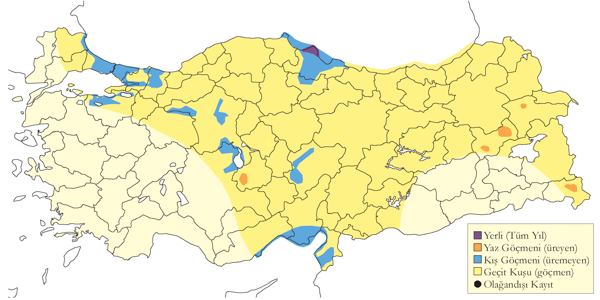
Üreme
İkisi de İç Anadolu’dan olmak üzere sadece iki kesin üreme kaydı vardır. İÇA. 14 Mayıs 1970’de Konya’nın kuzeydoğusunda bir kofa Juncus içinde en az iki tane iyice tüylenmiş yavru olan bir yuvaya yiyecek taşıyan bir çift gözlenmiştir. 23 Mayıs 1992’de, Eşmekaya Sazlıkları’nın kuru bölümünde sık ve yüksek otların içindeki üç yumurtalı bir yuvadan havalanan bir erişkin gözlenmiştir. Kaplanmamış bir çukur olan bu yuvada 5 Haziran’da yaklaşık 1 haftalık yavru görülmüştür. Bu iki kayıt yumurtlamanın nisan başı ile mayıs başında olduğunu göstermektedir; diğer yerlerde üreme çoğunlukla nisan sonunda başlar ancak bazen birkaç hafta daha erkendir. DOA. 19 Mayıs 1975’te Bulanık’ta, 9 Mayıs 1986’da Malazgirt’te ve 10 Mayıs 1986’da Balatos’ta kur uçuşu yapan erişkinler kaydedilmiştir. 24 Mayıs 2005’te Bulanık’ta ürediğinden şüphelenilmiştir.
Alttürler ve Sınıflandırma
Türkiye’de nominat alttürü bulunur.
Çobanaldatan
Caprimulgus europaeus, European Nightjar
Yaygın ve çok sayıda bulunan yaz konuğudur.
Batı ve güneyde oldukça yaygındır. Görünüşe göre Güneydoğu Anadolu hariç ülkenin geri kalan kesiminin de büyük bölümünde lokal olarak bulunur. Muhtemelen kayıtların gösterdiğinden daha yaygın olmasına rağmen Güneydoğu Anadolu’nun sadece güneyinde varmış gibi görünmektedir. Üreme sezonunda, en az 2300 m’ye kadar genellikle kuru çalılıklarda ya da açık ağaçlık alanlarda bulunur. Geçiş sırasında biraz daha yaygındır. En azından mayıs ortasından kuzeyde eylül sonuna ve güneyde ekim sonuna kadar görülür. İstisna olarak 6 Mart 1970’de Alanya’da yorgun bir birey bulunmuştur. En geç kayıt ise 10 Kasım 1970’de yine aynı bölgeden Erdemli’dedir. Hem ilkbahar hem de sonbaharda, Uluabat ve Manyas gölleri ile Göksu Deltası’nda (van den Berk ve van der Winden 1992) 40-100 bireylik gruplar kaydedilir. 26 Aralık 1996’da Sultansazlığı’nda bir kış kaydı iddiası vardır (Kirwan, 1997). Diğer kış kayıtları 20 Kasım 2010’da Şile İstanbul ve 3 Şubat 2011’de Bismil’in doğusundan gelir.
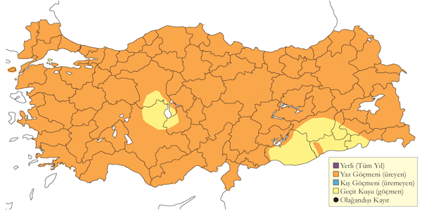
Üreme
Seyrek ağaçların bulunduğu ya da açık arazideki kuru çalılıklar, açık yaprak döken ve ibreli ormanlar, orman kenarları ve ağaçların yakınındaki açık alanlar, çalılık kıyı kumulları ve seyrek çalıların olduğu küçük, kayalık vadilerde bulunur. Yuvalamak için çıplak, kuru zemine ihtiyaç duyar. AKD. Toroslar’da 2300 m’ye kadar görülür. 25 Mayıs 2004’te Akköy’de yaklaşık 1 m boyundaki çalıların arasında çıplak toprak parçalarının olduğu bir yamaçtaki yuvasında, bir yumurtanın üstünde kuluçkada olan bir erişkin (muhtemelen tamamlanmamış kuluçka) uçmuştur. İÇA. 12 Mayıs 1970’de Çay’da çalılıklarla kaplı bir yamaçta bir yuva bulunmuştur. GDA. 9 Haziran 2004’te, 2250 m’de Nemrut Dağı’ndaki en büyük kraterin yakınlarında, kayaların ve küçük, çıplak açıklıkların olduğu yaprak döken, seyrek ağaçlık bir alanda muhtemelen bir çift havalanmıştır. Dişi, bir ağacın altında yuvalamaya çok uygun olan çıplak zeminden havalanmış ve ardından yaklaşık 80 m mesafede büyük bir kayanın üstünde dinlenen bir erkek kısaca ötmüş ve ardından uçmuştur. Mayıs başından eylüle kadar görülürler; bu aylarda ötüşleri ve kanat çırpma kurları görülür. Diğer yerlerde olduğu gibi iki kez kuluçkaya yattığı düşünülmektedir. Olağan kuluçka büyüklüğü iki yumurtadır ve yumurtalarını hiç yuva malzemesi koymadan çıplak toprağa bırakır.
Alttürler ve Sınıflandırma
Türkiye’de meridionalis alttürü vardır ancak bu tür içindeki varyasyon neredeyse tamamen klinaldir. Meridionalis alttürünün var olduğu kanısını sürdürmekteki mantık (Vaurie, 1960) tarafından tartışılmıştır ancak biz teşhisinin nispeten zayıf olduğunu düşünüyoruz.
Ak Karınlı Ebabil
Tachymarptis melba, Alpine Swift
Oldukça yaygın ve çok sayıda bulunan yaz konuğu ve geçit türüdür.
İstanbul’daki çok boldur ve Elazığ gibi birkaç başka şehirde de büyük kolonileri bilinmektedir. Deniz seviyesinden en az 2700 m’ye kadar ürer ancak çoğunlukla yaylalarda ve dağlık alanlarda kaydedilir. Özellikle Toroslar’da olmak üzere güneyde ve batıda en bol, kuzeyi ve doğusuyla sınırlı olduğu Güneydoğu Anadolu’da ise en azdır.
Lokal olarak önemli sayılarda kaydedildiği geçiş döneminde yaygındır. Düzenli olarak mart başı ya da ortasından itibaren kaydedilir. En erkeni 21’inde olmak üzere şubat sonunda üç kayıt vardır. Mart 1987 sonunda yüksek sayılar Çukurova üzerinden geçmiş (van der Have vd. 1988) ancak Göksu Deltası’nda 1971 ve 1973 yıllarında nisan başı ve ortasında yüksek sayılar kaydedilmiştir (OST, 1975). Sonbahar geçişi ağustos ortası ile ekim ortası arasında gerçekleşir; İstanbul Boğazı’nda eylülün ilk on günü (Porter, 1983) ve Belen Geçidi’nde eylül ortasındaki iki hafta boyunca (Sutherland & Brooks, 1981) zirve yapar. Öte yandan, geriye kalanlar Trakya’da ekim sonuna kadar ve Akdeniz’de kasım sonuna kadar kaydedilir. Yüzlercesi, hatta binlercesi en az ekim sonuna kadar İstanbul’da kalabilir. İstisna olarak, 1994’te 6 ve 19 Aralık’ta İstanbul’da kaydedilmiştir.
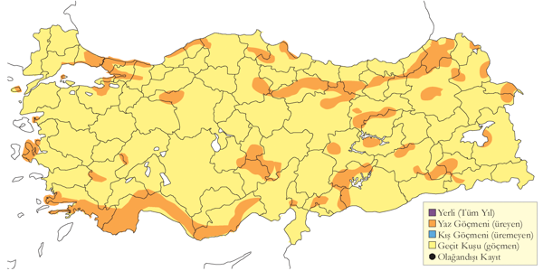
Üreme
Kayalıklarda (kıyı ve iç kesimlerde), yüksek binalarda, yıkıntılarda (örneğin Van Kalesi’nde, Doğu Anadolu), köprüler gibi insan yapımı yapılarda ve Kapadokya’da peri bacalarında kolonileri vardır. Koloniler birkaç çiftten, örneğin İstanbul’da 20 m’lik bir binanın tavan arasında 12 çift, yüzlercesine, örneğin Hakkâri’nin batısında 300 çift, kadar çeşitlilik gösterir. Kaya yüzeyindeki yarıklarda, genellikle ince çatlaklarda; bir çıkıntıda ya da doğrudan yarığa tutunmuş olan yuvasını uçuş sırasında topladığı bitki artıkları ve tüyleri tükürükle yapıştırarak sığ bir kâse şeklinde yapar. Türkiye’de gözlenen yumurta sayısı 1 (2 yuvada), 2 (3 yuvada), 3 (6 yuvada). Yavru sayısı: 3 (4 yuvada), 2 (2 yuvada). Türkiye’den veri yoktur ancak diğer yerlerde yavrular 6-8 hafta yuvada kalır. MAR. İstanbul’da 21 Nisan 1970’de, bir duvarla ahşap kepenk arasında bir çiftin neredeyse tamamlanmış bir yuva yaptıkları gözlenmiştir. 3 Haziran 1992’de üç yumurtalı iki yuva bulunmuştur. 2004’te, eski bir binanın tavan arasında yuvalanmış en az 10 çift ve dar, dikey bir yarık oluşturan ahşap süs rafların bir yüzeyine tutturulmuş yuvalarda üreyen iki çift kaydedilmiştir. 7 Haziran 2004’te yuvadan ve yuvaya uçan erişkinler ve yuvadan uçarken çiftleşen bir çift, 27 Haziran 2004’te ise iki kez bir yuvaya uçup iki kanadıyla sımsıkı tutunan ve en az bir büyük yavruyu besleyen bir erişkin gözlenmiştir. 13 Haziran 2006’da, bu binada kullanılan sekiz yuva bulunmuş; 17 Mayıs 2007’de ise iki çiftin yuva yaptığı ve bir erişkinin kuluçkada olduğu gözlenmiştir. 14 Haziran 2006’da, bir tavan arasındaki artıkların arasında en az 12 çiftin yuvalandığı kaydedilmiş; üç yuvada sırasıyla üç yumurta, üç yeni yumurtadan çıkmış yavru ve yumurtlamanın mayıs ortasında olduğunu gösterecek şekilde yaklaşık 4-5 günlük iki yavru görülmüştür. İÇA. İç 14-15 Haziran 1977’de, Göreme’de bir güvercinliğin içinde 11 yuvanın görünür olduğu 15 çiftlik bir koloni bulunmuştur; iki yuvanın sadece 30 cm mesafede olduğu kolonideki altı yuvada kuluçkanın ileri evresinde yumurtalar ve dört yuvada yeni yumurtadan çıkmış yavrular gözlenmiştir (Schubert, 1979). 14 Haziran 1993’te, Göreme’de başka bir peri bacasında, dik bir duvarda boş ancak yumurtlamaya hazır bir yuva ve bir güvercin oyuğunun dibinde iki yumurtalı başka bir yuva bulunmuştur. EGE. 8 Mayıs 1950’de Çeşme yakınlarında Ilıca’da bir kayanın yüzeyindeki dar bir çatlakta bir yumurtalı bir yuva kaydedilmiştir ((McNeile, 1950, 1951, 1954, 1967, 1968, 1970, 1972, 1973)). Çoğunlukla mayıs-temmuz ayları arasında tüm bölgelerde deliklere giren birkaç erişkin kaydı vardır.
Alttürler ve Sınıflandırma
Türkiye’de nominat alttürü bulunur.
Ebabil
Apus apus, Common Swift
Yaygın ve çok sayıda bulunan yaz konuğudur.
Ülke genelinde şehirlerde ve köylerde, bazen de mağaralarda ve kayalıklarda yaygın olarak ürer. Karadeniz Bölgesi’nde nispeten seyrektir. Deniz seviyesinden en az 2300 m’ye kadar ürer. Daha çok nisan başından itibaren kaydedilmesine rağmen güneydeki birçok alana şubat sonundan itibaren gelmeye başlar. 1992’de Kızılırmak Deltası’nda geçişin nisan ortasında başladığı ve mayısın son iki haftasında zirve yaptığı belirtilmiştir (Hustings & Dijk, 1994). Öte yandan, güneyde geçiş muhtemelen nisan sonu ile mayısın ilk haftasının sonu arasında (van der Have vd. 1988), İç Anadolu ile Doğu Anadolu’da ise mayısın ilk iki haftasında zirve yapar.
Geçişi, geniş bir cepheden sürekli ve yüksek sayılarda olabilir. Örneğin, 7 Mayıs 2002’de Mardin’de sadece 15 dakikada 3000 birey sayılmıştır. Üreme alanlarını ağustos başında terk etmeye başlar. 1 Ağustos 1974’te Aşkale’de sıradışı bir şekilde yaklaşık 10.000 birey kaydedilmiştir. Ağustos sonunda çoğu gitmiş olur: 1976’da Belen Geçidi’ndeki en yoğun geçiş 19-29 Ağustos’ta olmuştur (Sutherland ve Brooks 1981b). Eylül sonuna kadar nadir olsa da yaygın olarak kalabilir. İstanbul’da ekim sonuna ve İç Anadolu’da kasım ortasına kadar kaydedilmesine rağmen 1960 ortalarında İstanbul Boğazı’nda 10 Eylül’e kadar büyük çoğunluğunun gitmiş olduğu Porter tarafından gözlenmiştir.
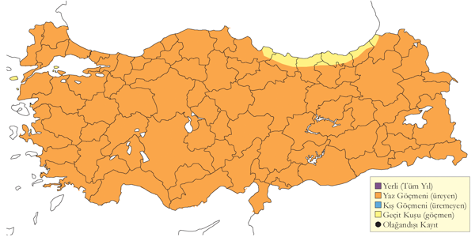
Üreme
Çoğunlukla şehir, kasaba ve köylerde yuvalar. Hem kıyılarda adalarda, hem de iç kesimlerdeki vadi ve kanyonlarda uzak yerlerdeki kayalıklarda da ürer. Koloniler, birkaç çiftten Uludağ’da 1900 m’deki otel çatılarında üreyen 200 kuşa kadar çeşitlilik gösterir (Jetz 1995). Genellikle yüksek binalarda, çoğunlukla çatıların içinde ve saçakların altında aynı zamanda yıkıntılarda, köprü altlarında ve kayalıklardaki deliklerde ve yarıklarda yuva yapar. DOA. 13 Mayıs 1970’de Ardahan yakınlarında bir kayalıkta muhtemelen bir ev kırlangıcına ait çamurdan yapılmış bir yuvaya giren bir erişkin görülmüştür. EGE. (McNeile, 1950, 1951, 1954, 1967, 1968, 1970, 1972, 1973), 8 Mayıs 1950’de Çeşme yakınlarında Ilıca açıklarındaki iki kayalık adacığı ziyaret etmiş ve bir yumurtalı bir yuva (tamamlanmamış kuluçka) ve alçak kayalıklarda yatay bir çatlakta üç yumurtalı başka bir yuva bulmuştur. Uçuş sırasında topladığı otları, artıkları ve tüyleri tükürükle birleştirerek sığ bir kâse şeklinde yaptığı yuvası bir çıkıntıda ya da düz bir zeminde yer alır. İÇA. 19 Nisan 1967’de Eber Gölü’nde, 24 Nisan 1967’de Akşehir Gölü’nde ve 15 Mayıs 2004’te Cihanbeyli’de uçarken çiftleşen erişkinler gözlenmiş ve 24 Haziran 1998’de Cihanbeyli’de İnkuyu Vadisi’nde kayalıklarda yuvalanmış kuşlar kaydedilmiştir. MAR. 26 Haziran 1973’te Gülpınar’da yuva malzemesi taşıyan bir erişkin kaydedilmiştir. DOA. En geç 5 Ağustos 1966’da Van’da olmak üzere mayıs-temmuz ayları arasında yuva deliklerine uçan erişkinler gözlenmiştir. Üreme döngüsünün tamamı (tek kuluçka) 8-10 hafta sürer ki bu süre küçük bir kuş son derece çok uzundur.
Alttürler ve Sınıflandırma
Türkiye’de nominat alttürü bulunur.
Boz Ebabil
Apus pallidus, Pallid Swift
Nispeten yaygın ve yer yer çok sayıda bulunan yaz konuğudur.
Durumu nispeten belirsizdir. Türkiye’de ilk kez, Amik Gölü ile Birecik, Halfeti ve Urfa’daki gözlemlere dayanarak belgelenmiştir (Kumerloeve, 1970a, 1966). 1966-67’de Uludağ’da (şimdi burada üreyen küçük bir popülasyon olduğu bilinmektedir), İstanbul’da ve İstanbul Boğazı’nda ilk gözlemler yapılmıştır (OST, 1969). İstanbul’da, Doğubayazıt’ta İshak Paşa Sarayı’nda ve Uludağ’da, 1800-2500 m’de nispeten az sayıda kaydedilen bir yaz konuğudur. Artık İstanbul’da, Asya yakasında Kadıköy’le Bostancı arasında, Avrupa yakasında ise Bakırköy’le Ataköy arasında oldukça bol olarak ürediği bilinmektedir. Başka yerlerden daha nadir olarak bildirilir, en sık doğu Akdeniz’in uç kesimleri (OST, 1975, 1978; Beaman, 1986; Martins, 1989) ve Güneydoğu Anadolu’nun Akdeniz’e bitişik bölgelerinde (Nemrut Dağı yakınları (Adıyaman) gibi muhtemelen ürediği yerlerde) kaydedilir. Ayrıca, güneybatı kıyıları ile Karadeniz’in güneybatısında da yaz aylarında potansiyel üreme habitatlarında kaydedilir.
Nisan başında Göksu Deltası’nda 150 bireye kadar kaydedilmesine rağmen özellikle batıda ve güneyde olmak üzere diğer alanlarda nadir bir geçiş türüdür. İlkbaharda nisan başından itibaren kaydedilir, 27 Şubat’ta Akdeniz’de bir kaydı vardır. Sonbaharda, ağustos ortasından eylül sonu/ekim başına kadar geçiş yapar. Bazen Batı Karadeniz’den ekim ortasına kadar ve İstanbul’dan ise Ekim sonuna kadar geçer. 21 Eylül 1987’de Uludağ’da bir günde 150 birey ve 2 Ekim 1997’de İstanbul Boğazı’nda 85 birey sayılmıştır.
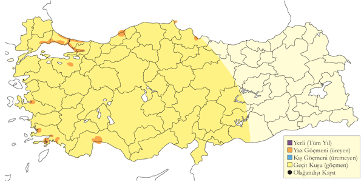
Üreme
Muhtemel üreme sezonunda, mayıs sonu ile ağustos arasında görülür. MAR. 1967’den bu yana, Uludağ’da 1850 m’de bazı binaların çatısına ebabillerle birlikte giren 25-40 birey düzenli olarak gözlenmektedir. DOA. 22 Mayıs 1985’te, İshak Paşa Sarayı’nda üreyen birkaç çift kaydedilmiştir. Türkiye’de yuvası ve kuluçka büyüklüğü tanımlanmamıştır ancak diğer yerlerde kayalıklardaki, duvarlardaki ve çatılardaki çatlaklarda, uçuş sırasında topladığı otları ve tüyleri tükürükle yapıştırarak sığ bir kâse şeklinde yaptığı yuvasına 2-3 yumurta bırakır. A. apus genellikle şehrin eski bölümlerinde çoğunlukla daha dar sokaklarda daha eski binalar ve diğer insan yapımı yapılarda (duvarlar gibi) ürerken boz ebabil İstanbul’da 1980’den sonra yapılmış nispeten yeni binaları tercih eder.
Alttürler ve Sınıflandırma
Muhtemelen biraz daha koyu tüy örtüsü (her ne kadar brehmorum alttürü içinde de kayda değer bir varyasyon olduğu bilinse de), daha belirgin soluk boğaz lekesi ve toplamda daha büyük olan illyricus alttürü ile yer değiştirdiği Dalmaçya kıyıları dışında brehmorum alttürü vardır (Chantler & Driessens, 1995; Hoyo et al., 1999). illyricus alttürünün zayıf bir şekilde farklılaştığı ile ilgili değerlendirmesine (Vaurie, 1965)biz de katılıyoruz. Nisan ayında Greco Burnu’ndan (Kıbrıs) alınan ve Tring Doğa Tarihi Müzesi’nde bulunan bir örnek (1951.13.740) illyricus alttürü ile çok iyi uyuşmakta ve bu formun Türkiye’de bulunabileceğini göstermektedir. Nominat pallidus alttürü doğuda bulunabilir (Roselaar, 1995). Çok yıprandığında tüy örtüsü her iki yüzeyde de çok soluk olabilir ve bu durum pallidus formunun orada bulunabileceğini düşündürecek şekilde güneydoğuda yaz ortasında gözlediğimiz kuşlarla uyumludur. Daha önce de belirtildiği gibi, illyricus ve brehmorum alttürleri arasındaki farklılaşma açık şekilde çok hafiftir ancak hem bu formlar arasındaki hem de bu formlarla nominat pallidus alttürü arasında marjinal olan varyasyon örtüşmenin derecesiyle belirsizleşir ve muhtemelen yıpranmadan çok etkilenir. Burada kabul edilen şartlar altında, brehmorum ve illyricus formlarını nominat pallidus alttürünün sinonimleri olarak kabul etmek en iyisidir.
Küçük Ebabil
Apus affinis, Little Swift
Lokal ve oldukça çok sayıda bulunan yaz konuğu ve lokal yerlidir.
Çok lokal ve genellikle nadir bir yaz konuğudur. Atatürk Barajı kadar kuzeyde bulunduğu göz önüne alınırsa Doğu Anadolu’nun güneybatısındaki bitişik alanlarda da üremesi olasıdır. En büyük kolonileri Birecik ve Halfeti’de Fırat nehri kıyısındaki kayalıklarda ve buralardan uzakta Kilis’tedir. Göksu ve Çukurova Deltaları ile Mersin gibi birkaç komşu bölgede de kaydedildiği geçiş sırasında biraz daha yaygındır. İlkbaharda, mart ortasından en az nisan sonuna kadar geçiş yapar ve sadece geçiş yaptığı yerlerde düzenli olarak 20 bireye kadar kaydedilir. Sonbaharda, eylül ortasında çoğu gitmiş olur, nadiren eylül sonuna kadar kaydedilir. Son zamanlardaki üç kış kaydı iddiası muhtemelen kışın dağıldığı bilinen İsrail’in kuzeyindeki yerli popülasyona aittir (Hoyo et al., 1999): bu kayıtların ikisi 6 Ocak 2007’de Antakya’dandır. Aynı yerde 4 Ocak’ta ve 13 Ocak 2008’de altışar tane kaydedilmiştir.
2 Temmuz 1970’de İskenderun Körfezi yakınlarında kaydedilen 8-10 birey yanlışlıkla Türkiye için ilk kayıt olarak bildirilmiştir (OST Bull. 7:1). 1881 yazında Antakya’da bir örnek alınmış (Chantre, 1883)ve Ağustos 1871’de Büyük Ağrı Dağı yakınlarında muhtemelen şüpheli olarak gözlenmiştir (Radde, 1884) . İlk güncel kayıt Nisan 1962’dedir (Eggers & Lemke, 1964; Kumerloeve, 1966) ve 1970’lerin sonunda Akdeniz kıyılarında veya yakınlarında en az 11 güvenilir kayıt elde edilmiştir (Kumerloeve, 1970a).
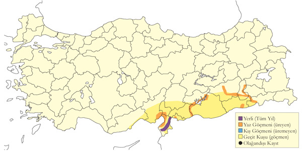
Üreme
Kayalıkların ve dar vadilerin olduğu kuru alanlarda ürer. Tipik olarak 4-15 yuvalı koloniler halinde ürer ancak 1971’de Kilis yakınlarındaki bir kolonide 25 çift kaydedilmiş (Warncke, 1972) ve 14 Mayıs 1989’da Kilis yakınlarında üremeye uygun habitatlarda 120 kuş gözlenmiştir. Birecik’teki kayalıklar boyunca birkaç küçük koloni olabilir ve 1973 yazında burada toplam 62 çift üremiştir. Yuvalar kayalıklarda, genellikle bir çıkıntının altına ya da bir oyuğun ya da mağaranın tepesine tutturulur. Diğer yerlerde de (örneğin Fas ve İsrail) binalar ve başka yapılar gibi korunaklı yerlerde yuva yapar ancak Türkiye’de böyle bir kayıt yoktur. Uçuş sırasında topladığı otları ve tüyleri tükürükle yapıştırarak küre şeklinde yaptığı yuvasını ince otlar ve tüylerle kaplar. Tek bir yuva olabileceği gibi birkaç yuva birbirine yapışık da olabilir. Her yuvanın ayrı bir girişi ve boşluğu vardır ancak yuvaların tamamı bitişik bir kütle oluşturur. Yuvalarını ayrıca, çamurdan yapılmış eski ve genellikle kısmen yıpranmış ev kırlangıcı yuvalarının içine de yaparlar. Aynı yuvayı onarıp art arda yıllarca kullanabilirler ancak bu konuda Türkiye’de veri yoktur. GDA. En iyi bilinen yerde, Birecik’te Fırat nehrinin doğu kıyısındaki ve yakınlardaki vadilerdeki yüksek kayalıklarda küçük kolonileri vardır.23 Mayıs 2004’te, Birecik’te bulunan yaklaşık 15 yuvalı bir kolonide, üç yuvanın bireysel, dört yuvanın eski ev kırlangıcı yuvalarının içinde ve yaklaşık 8 yuvanın da bir kütle halinde birleşik olduğu gözlenmiştir. Türkiye’de gözlenen yumurta sayısı veri yoktur; diğer yerlerde olağan kuluçka büyüklüğü 2-3 yumurtadır. Üreme döngüsü, küçük bir tür için son derece uzundur. İlk yumurtanın yumurtlamasından yavrunun yuvayı terk edişine kadar geçen süre yaklaşık 9 haftadır ve genellikle yılda iki kez kuluçkaya yatar. En erken üreme kaydı, Suriye sınırı yakınlarında Kilis’te bir kayalıktaki mağarada 7 Nisan 1971’de bulunan 25 çifttir. Aynı yerde, 19 Ağustos 1972’de 60 birey gözlenmiştir. -19 Nisan 1988’de Birecik’teki yuvaların hala boş olduğu gözlenmiştir; burada Mayıs-Ağustos aylarında birçok yuvada erişkin kaydı vardır ve erişkinlerin 7 Eylül (1994) kadar geç bir tarihte bile yuvalarına girdikleri gözlenmiştir. 8 Temmuz 1986’da Siirt yakınlarında bir koloni (20 birey) bulunmuştur. AKD. 11 Nisan 1971’de İskenderun yakınlarında dar bir vadideki mağarada üreyen yaklaşık 15 çift kaydedilmiştir (Warncke, 1972).
Alttürler ve Sınıflandırma
Türkiye’de galilejensis alttürü bulunur.